你正在閱讀繁體中文版的 KOReader 使用者指南。本指南亦由志工翻譯成多種語言。如下方的翻譯進度總覽所示，各語種的翻譯進度一目瞭然。基於實用考量，表中僅提供翻譯進度超過 50% 的語種版本連結。
若要檢視目前所有正在翻譯的語言及其進度，或想為本指南的翻譯貢獻心力，請前往本專案的Weblate 群眾外包翻譯頁。
使用者指南的翻譯進度總覽

本指南主要為彩色螢幕設計。若你是第一次閱讀，強烈建議使用電腦、平板或手機瀏覽，因為本指南會用不同顏色標示 KOReader 介面的各個部分，色彩能使各類說明更容易理解。當然，你仍可在電子墨水螢幕上閱讀本指南，只是這些內容未針對 e-ink 優化，體驗可能不佳。
你可以使用瀏覽器的頁內搜尋功能（快速鍵通常為 Ctrl + F）尋找特定主題或關鍵字。若對本指南有建議或疑問，請前往GitHub 討論串提出。
本指南中的部分文字會依其分類使用不同顏色：
軟體介面（藍標） |
狀態列、書籍地圖等功能…… |
選單路徑（綠標） |
|
外部軟體（紫標） |
Calibre、Readwise、KoHighlights 等。 |
指南中亦設有不同的欄目向你提供更多資訊和警告：
KOReader 由世界各地的志工合作開發及提供支援。你也可以成為本專案的一份子：
- 修復程式錯誤及加入新功能
- 將程式翻譯成你的語言，或改善現有的翻譯
- 在論壇或 GitHub 議題與討論中，運用你的知識幫助他人
請檢視聯絡我們部分以獲得相關連結。
指南最後更新：2025-03-25
儘管外觀簡約，KOReader 仍是一款功能強大且可高度自訂的軟體。本章節如同操作指南的導覽頁，是新使用者上手的最佳起點。你將從本章節瞭解 KOReader 具備哪些功能，以及如何透過點選功能項後方的連結按鈕 前往對應章節學習操作方式。
- USB 大容量儲存裝置（需閱讀裝置支援此功能）
- 透過相應的雲端儲存（Dropbox/FTP/Webdav）帳戶
- 讓 KOReader 作為 SSH 伺服器，並利用 SFTP 應用程式或檔案管理器直接傳輸檔案
- 藉助 Calibre 外掛，可透過 Wi-Fi 直接從 Calibre 書庫將書籍傳送到 KOReader 裝置
- 藉助新聞下載器外掛，你可以將 RSS 及 Atom 的文章以 HTML 檔案格式下載至閱讀裝置
- 透過 Wallabag 外掛從你的 Wallabag 帳號拉取文章（一款自架、類似 Pocket 的稍後閱讀服務）
- 更換字型（包含你自己的字型）、調整字型大小、對比、粗細、字距微調、文字間距、文字擴充、文字對齊方式、行距、分欄版式及頁邊距等
- 使用功能強大的內建樣式微調，或自行編寫樣式，精確控制書籍的呈現方式
- 手動或自動開啟夜間模式，反轉螢幕顏色
- 自動調整你的前光暖度
- 將筆記和劃線以純文字、Markdown、HTML、JSON 或 Kindle 筆記與摘錄格式匯出
- 同步至線上服務，例如 Joplin、Readwise、Memos、Flomo 和 XMNote
- 強大的檔案瀏覽器，你可以在其中複製、移動、重新命名、建立、刪除檔案和資料夾，以及執行批次操作
- 以你喜歡的方式瀏覽書庫，支援多種詳細檢視與馬賽克檢視
- 將書籍加入最愛以便快速存取，或建立你自己的收藏清單，並可排序與篩選
- 快覽工具可在頁面、章節和書籤之間快速跳轉
- 獨特的書籍地圖可讓你鳥瞰全書，一覽所有筆記與劃線
- 頁面瀏覽器讓你像翻閱膠卷般瀏覽頁面
- 書籤瀏覽器可輕鬆瀏覽你的劃線與筆記
- 如果你不喜歡書籍原有的目錄，可以自動或手動建立替代目錄
- 隱藏並排除書籍中的特定部分，例如附錄、索引、參考文獻等，以取得更準確的頁數統計
- 強大的手勢系統內建 200 餘項操作指令，讓你只需點選或滑動，即可控制 KOReader 的各項功能
- 若你配有鍵盤（內建、有線或藍牙），也可為這些操作指定鍵盤快速鍵
- 或者用快速選單把你常用的操作建立成專屬選單，點選或滑動即可隨時叫出
- 建立設定檔，全面控制 KOReader 的各項功能並將操作自動化
- 選取或輸入文字來搜尋文件，支援正規表示式
- 在你的書籤、劃線、筆記中搜尋
- 長按文字即可在維基頁面或已安裝的字典中查詢並翻譯
- 一鍵將整頁內容翻譯成多達 130 種語言
- 透過我們強大的外掛系統，你甚至可以在安裝外掛後，與 ChatGPT 討論書中內容
- KOReader 可以自行更新
- 在特定時間後調暗或關閉螢幕燈
- 為不同的閱讀情境設定個別的頁面重新整理頻率
- 用隨機圖片、書籍封面、閱讀進度等多種選項設定你的待機畫面。
- 設定電量充電限制提醒，防止深度放電與過度充電
- 設定記憶體用量提醒（對記憶體較小的裝置很有用），並可選擇在達到上限時重新啟動 KOReader
- 自動或手動裁切頁邊空白
- 重排文件以擷取文字，方便在小螢幕上閱讀
- 對不含文字層的 PDF 文件（如舊書掃描檔）套用 OCR
- 支援多種縮放方式與翻頁方向，讓多欄文件（如學術文獻）更容易閱讀
- 自動校正傾斜的文件，例如掃描的舊書
- 將你的劃線直接儲存到 PDF 檔案中，這樣即使沒有 KOReader 也能看見
- 專為閱讀漫畫設計的分格縮放功能
- 可調節螢幕重新整理設定，完美平衡殘影和速度
- 為書籍加入你自己的 CSS 樣式微調
- 使用者修補程式系統可讓你改變 KOReader 的核心運作機制
- 從剪貼簿產生 QR 碼，將文字和連結分享到其他裝置
- 檢視 EPUB 文件的 HTML 原始碼
- 在你的裝置建立或編輯文字檔
- 開啟終端機模擬器並在裝置上執行命令
- 檢視 CPU、記憶體和電池的使用統計資料
KOReader 支援 PDF、EPUB、DJVU、MOBI、CBZ、CBT、DOCX、RTF、HTML、TXT、XPS、FB2、PDB、CHM 和 MD 檔案，還可開啟 ZIP 壓縮檔並顯示圖片檔案。
有許多方法可以將檔案傳輸到你的裝置。請注意，你可能需要重新啟動 KOReader 才能為新傳輸的檔案建立索引（若你使用的是 Pocketbook/Android，則需重新整理目錄）。
除了以與內建閱讀器應用程式相同的方式傳輸檔案外，依你的裝置不同，還有其他選項可供選擇：
- KOReader 內建的 USB 大容量儲存模式：KOBO 及部分 CERVANTES 型號支援此功能。
- 雲端儲存（Dropbox/FTP/Webdav）：使用此功能前，必須透過下方顯示的選單項目登入雲端儲存伺服器的帳戶。新增帳戶時的詳細步驟，可點選選單中的說明按鈕檢視：
- SSH/SFTP 存取：KOReader 可作為 SSH 伺服器，讓你從電腦連線並傳輸檔案（Kobo、Kindle、Cervantes 可用）。你可以使用 SFTP 應用程式（如 Filezilla），若作業系統支援，也可透過檔案管理器存取。請查閱我們的維基頁面瞭解操作流程，並留意下方的警告欄。
- Calibre 傳輸：藉助 Calibre 外掛，可透過 Wi-Fi 連線直接從 Calibre 書庫將書籍傳送到 KOReader。請查閱我們的維基頁面瞭解操作方法。
- 新聞下載器：此外掛可將 RSS 及 Atom 訂閱源的文章下載為 HTML 檔案。請查閱維基頁面瞭解操作方法。
- Wallabag：此外掛可從 Wallabag 拉取文章，這是一款自架、類似 Pocket 的稍後閱讀服務。請查閱維基頁面瞭解更多資訊。
警告 如果你決定在不設定密碼的情況下使用 SSH 功能，請格外小心，因為這會讓你的裝置處於開放存取的狀態。不過如果只是短暫開啟裝置 Wi-Fi，且連上的是家裡的 Wi-Fi 網路，那麼這個風險是可以忽略的。
可用以下方式存取你的書籍：
若要變更這些畫面的外觀，請從這裡設定：
若想調整這些螢幕上顯示的項目數量，請在此處設定：
每個對話方塊可指定專屬叫出手勢。例如在閱讀過程中可使用手勢叫出歷史記錄或者最愛視窗來開啟另一本書，無需開啟檔案瀏覽器。
在歷史記錄畫面點選左上角的漢堡選單鈕，即可依檔案名稱或書籍詮釋資料搜尋書籍。
還可將最愛或者歷史記錄視窗設定為 KOReader 首屏，代替預設的檔案瀏覽器。請按如下路徑操作：
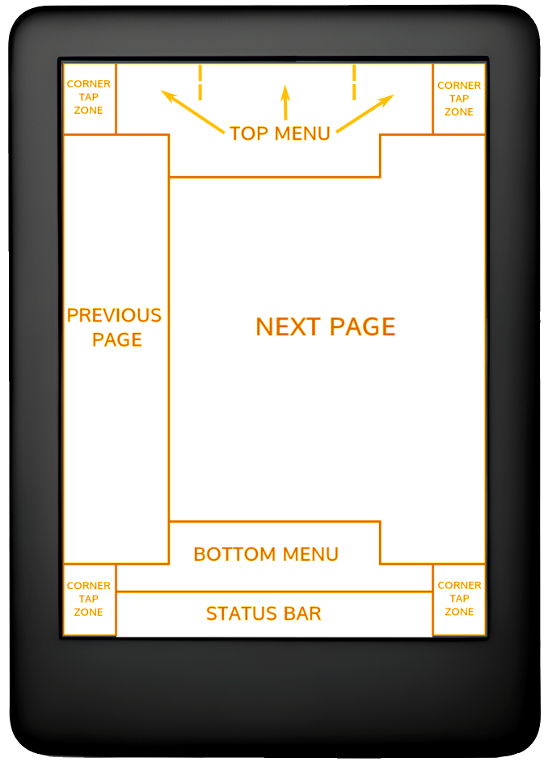
上方的圖片展示了 KOReader 的預設點選區域功能劃分；請點選螢幕上的對應區域叫出頂部選單或者底部選單。頂部選單也可透過從螢幕上端下滑來叫出。在非觸控螢幕閱讀裝置上（如 Kindle 4），底部選單可透過按動確認鍵叫出。
若要在點選頂部選單區域時同時叫出頂部選單及底部選單，請按照下方所示選單項目設定：
四角觸控區可用於多種手勢，如點選、雙擊、雙指點選以及長按。
另外，前一頁和後一頁觸控區還支援雙擊手勢。
在狀態列觸控區點選時，如果設定狀態列僅展示一項圖示，則將循環切換各圖示；如果設定展示多項圖示，則點選將使狀態列顯示或隱藏。
- 取代字型*：
- 放大文字
- 加粗文字
- 反轉螢幕顏色（顯示為黑底白字）
透過底部選單中的其他格式選項，可精細調整文字樣式。以上說明僅僅是部分快速上手指南。詳細說明請點選自訂文字外觀前往對應章節閱讀
此選單可控制螢幕燈光。若裝置配備有暖光燈（普通白色 LED 燈混合橙色 LED 燈而成），可在此處分別控制兩種燈光。若要指定叫出本對話方塊的手勢，請按如下路徑操作：
若要將書籍封面或自訂圖片設定為待機屏顯，請按如下路徑操作：
JPG 和 PNG 圖片可用作待機屏顯（為取得更好的顯示效果，建議將圖片轉換為包含色彩抖動的灰階圖片）。將圖片檔案匯入閱讀裝置的任意資料夾，然後將該資料夾指定為待機屏顯圖片來源。請按照下方路徑操作：
更多關於轉換圖片以用作待機屏顯的專業資訊，請參閱這則Mobileread 論壇主題帖。
此處僅說明鍵盤的基本用法；若要檢視鍵盤快速鍵的相關資訊，請點選此處前往該章節。
- 點選輸入框以外的區域關閉鍵盤；點選輸入框再次叫出鍵盤
- 對字母按鍵上劃輸入對應大寫字母（如已按下 Shift 鍵則為輸入對應小寫字母）
- 若要改變鍵盤樣式，請依照下方路徑操作：
- 你可以同時選取多種鍵盤配置：
- 點選鍵盤上的圖示即可切換鍵盤配置
長按鍵盤按鍵可輸入特殊字元；常用特殊字元如下圖所示。長按某個數字鍵（圖上的灰色框）以鍵入其周圍的字元：
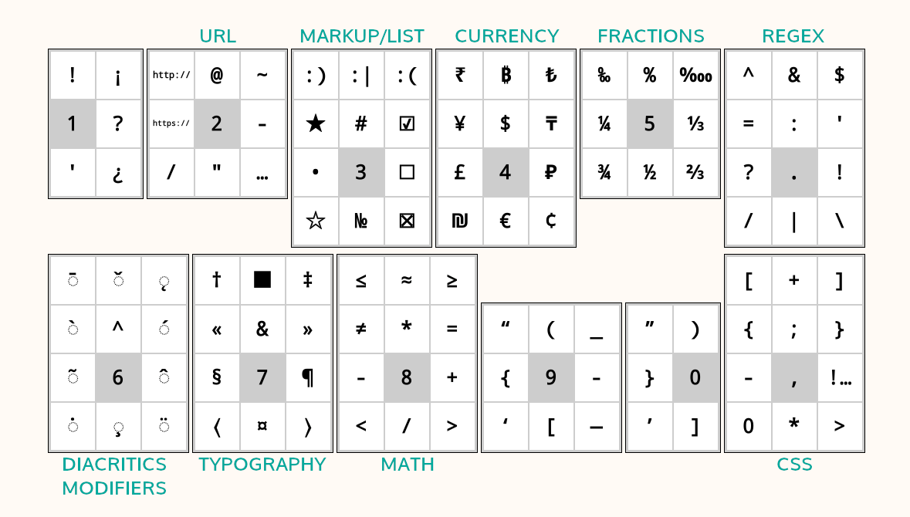
除了長按鍵盤按鍵彈出的特殊字元視窗外，還可透過在按鍵上滑動輸入特殊字元。如下方圖示，在字母 a 按鍵向其他方向滑動，可輸入對應字元（如上劃輸入大寫字母 A）。請注意圖中的完整特殊字元視窗僅供示範，在滑動時不必等待視窗彈出即可完成輸入。熟悉特殊字元的位置排布之後，滑動輸入會讓打字非常迅速。
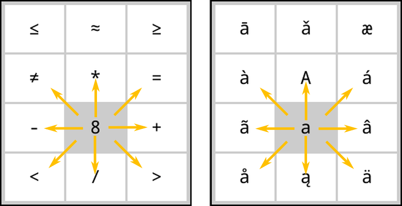
若此功能對你造成干擾，請取消勾選以下選項以將其停用：
另外，快速鍵可以讓字元修改更加便捷。長按下列按鍵以執行對應操作：
- 左方向鍵 - 將遊標移至行首
- 右方向鍵 - 將遊標移至行末
退格鍵在滑動手勢下可執行不同操作：
- 點選：刪除前一個字元
- 長按：刪除整行
- 左劃：刪除遊標左側的字
- 上劃：刪除遊標所在的整個字詞
詳細資訊請查閱對應維基頁面。
KOReader 亦包含用於輸入繁體及簡體中文的筆畫輸入法。請查閱維基頁面瞭解更多資訊。
該外掛適用於支援自然光（黃色光/橘色光）的裝置，用於按照時間表自動調整螢幕前光暖度及開啟夜間模式（螢幕顏色反轉為黑底白字）。該功能既可同時設定兩者，又可單獨開啟暖度控制或夜間模式以便手動調整另一項。
本外掛隨 KOReader 安裝過程預設啟用。若其未列於選單中，可透過下列路徑啟用：
螢幕前光暖度自動調整功能提供兩種切換模式：
固定時間表：按照使用者輸入的時間點切換螢幕前光暖度。該模式的切換點是固定的，全年保持不變、無視白晝長度的季節變化。
太陽方位：根據使用者輸入的經緯及海拔資訊計算所在地太陽方位，並依照太陽起落資料調整螢幕前光暖度。該模式的切換點是動態變化的，隨一年四季白晝長短變化而調整。
請先看一下這張圖片，熟悉外掛中使用的術語：
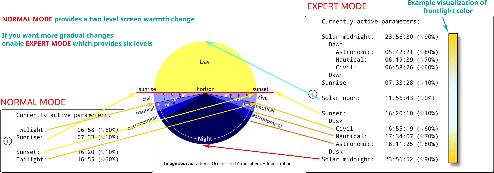
- 按照下列路徑找到外掛選單：
- 點選啟用選單項目，然後點選依照固定時間表
- 回到上級選單，點選固定時間表設定
- 調整各選單項目以設定暖度切換時間表。選單中的專業詞彙含義請參閱上方圖片。
- 按照下列路徑找到外掛選單：
- 點選啟用，然後點選根據太陽方位切換
- 返回上級選單，點選座標設定。設定目前的經緯（必填）及海拔（選填），並為該座標取個名稱。
- 返回上級選單，點選暖光及夜間模式設定
- 調整各選單項目以設定暖度切換時間表。選單中的專業詞彙含義請參閱上方圖片。
透過目前生效的參數選項，可檢視裝置目前正在使用的時間表。
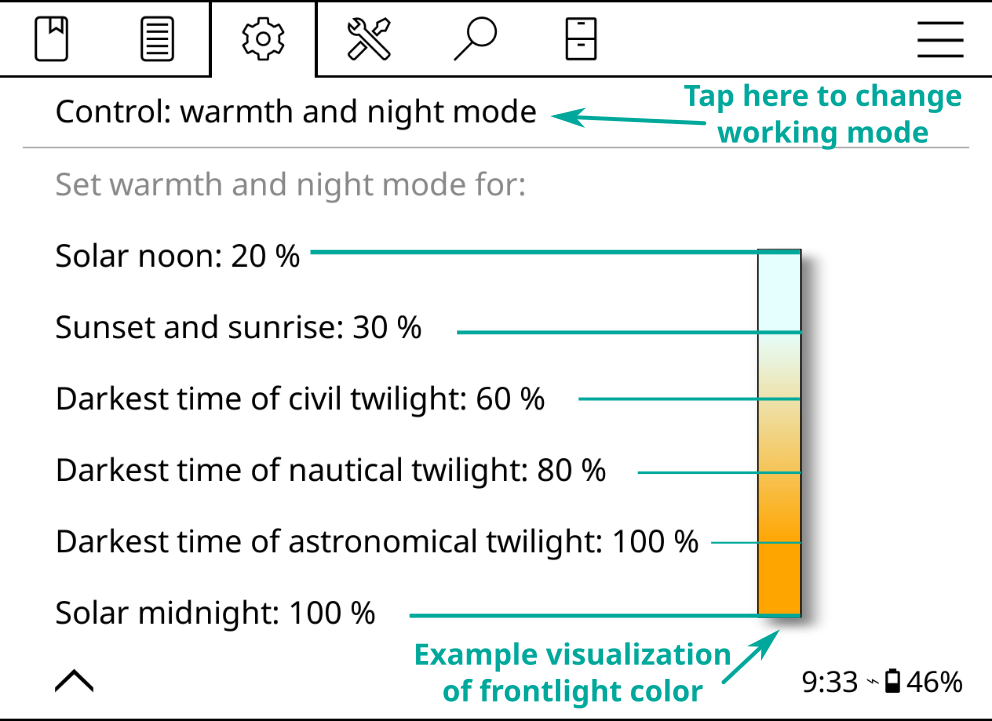
在為不同時段設定暖光百分比時，你也可以把該時段設為夜間模式，這樣一來該時段開始時螢幕顏色就會反轉。如果前光的最低亮度仍然太亮，或是你偏好深色頁面背景，可以啟用這項功能。若要啟用，請在下方的對話方塊中點選夜間模式核取方塊，再點選設定。
設定後該時段旁將出現月亮圖示。若要停用夜間模式，只要取消勾選該時段的夜間模式核取方塊即可。
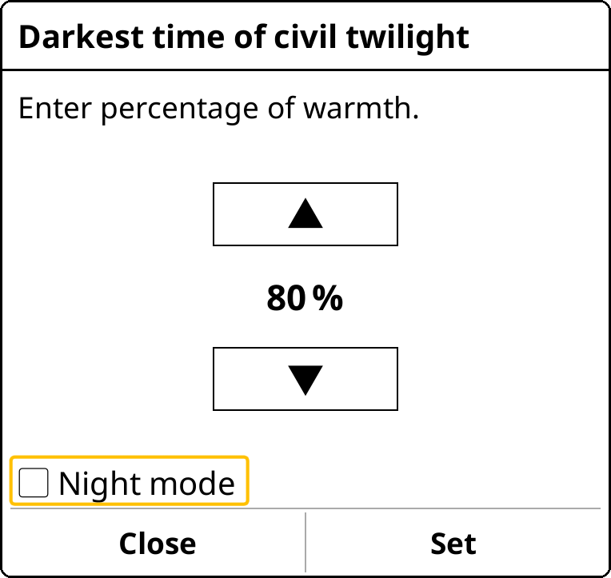
這項功能會依據此外掛中的目前生效的參數，在日落時開啟前光、在日出時關閉。你也可以手動開關前光來覆蓋這項變更；到了下一次日出或日落時，若有需要，自動暖光會再次切換。選取此外掛中的白天時關閉螢幕前光選單項目，即可啟用這項功能。
若希望螢幕前光暖度調節以快速切換而非平滑漸變方式執行，請按下列路徑操作：
- 參照前文說明將模式改為固定時間表
- 並調整下圖所示的選項：
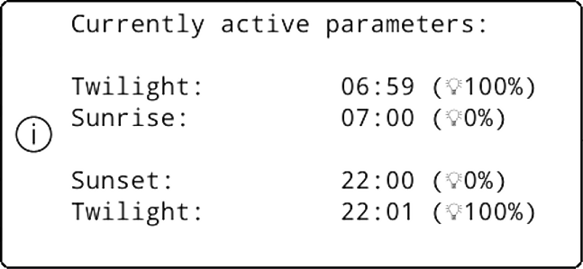
按上圖所示時間表，暖度晝夜切換將在一分鐘內完成。這意味著螢幕前光暖度將在一分鐘內從 0 調節到 100（或反過來）。該用時可單獨設定以拉長切換過程。
KOReader 採用簡潔、以黑白為主的使用者介面，這是因為漸層色和不同深淺的灰色會讓電子墨水螢幕出現閃爍和殘影，進而影響閱讀體驗。
KOReader 有兩套核心介面：閱讀介面及檔案瀏覽器。接下來將先介紹閱讀介面；檔案瀏覽器請前往本指南對應章節瞭解。
閱讀畫面有兩套選單：
- 頂部選單包含與 KOReader 使用相關的大部分常見選項。在其中可翻查書籍、調整 KOReader 功能、設定外掛等。
- 底部選單則整合與書籍排版相關的選項，如字重、字型大小、行距等。調整文字樣式將主要在底部選單中操作。
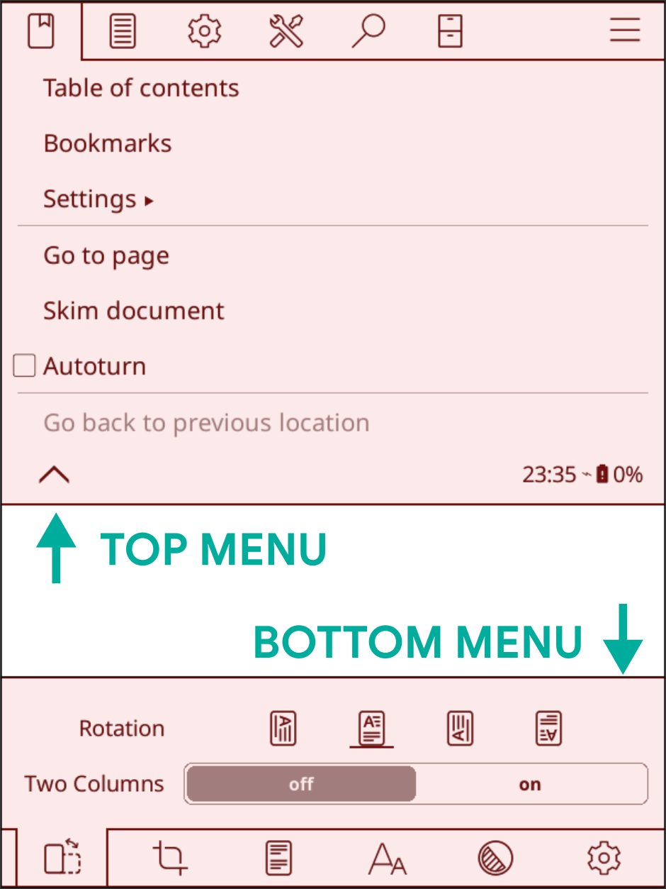
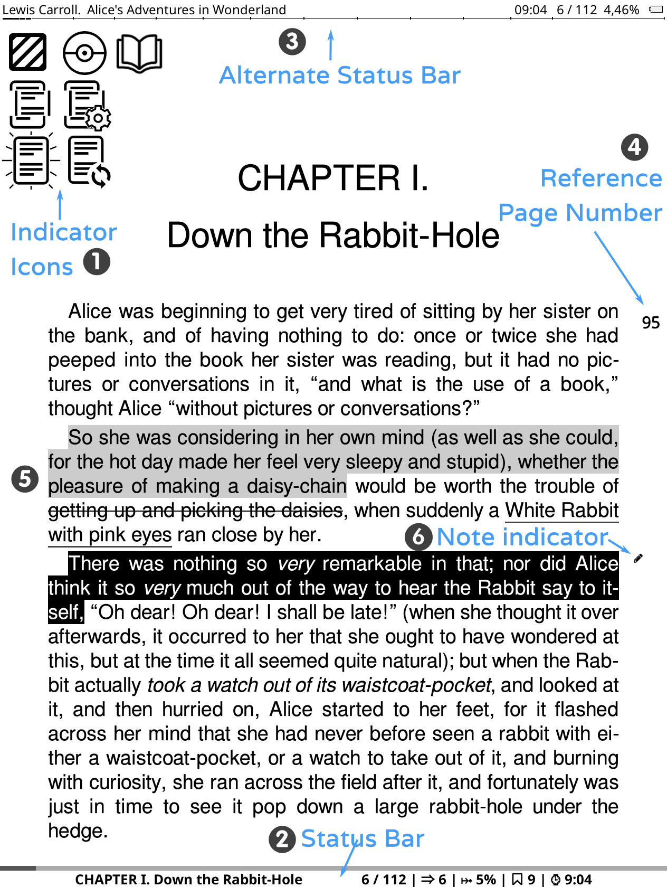
上圖展示了可能出現在閱讀介面上的各類標誌：
- 指示標誌：這些標誌說明某些狀態及目前處理程序，將在特定階段出現在螢幕左上角。實際顯示中這類標誌的尺寸會更小，此處僅放大以供辨識。接下來的一節詳細介紹了各標誌對應的功能：指示標誌
- 狀態列：這是一個高度可自訂的區域，你可以在此檢視關於書籍和 KOReader 的各種資訊。請前往狀態列章節瞭解詳情
- 頂部狀態列：除了介面底部的預設狀態列，螢幕頂部還提供頂部狀態列可自行啟用。請前往狀態列章節瞭解詳情
- 頁碼參考：如果出版方提供了印刷版書籍的頁碼，它們將在此處顯示。請前往頁數計數及頁碼參考章節瞭解詳情
- 劃線樣式：KOReader 提供如圖所示的多種劃線樣式。若閱讀裝置配有彩色螢幕，使用者還可使用彩色劃線。點選書籤、劃線和筆記章節瞭解詳情
- 筆記標記：該標誌出現在新增了筆記的劃線旁。KOReader 提供多種樣式的筆記標記。前往書籤、劃線和筆記章節瞭解詳情
如上圖所示，KOReader 提供了一些指標，讓你瞭解目前的處理程序與狀態。在執行特定操作時，這些圖示會出現在螢幕的左上角。
分段繪製標誌 這組標誌指示了分段繪製處理程序，會比其他標誌更常出現。當使用者調整了底部選單中的選項，這組標誌就會顯示。 該功能透過僅繪製目前章節（而非整本書）以便使用者快速預覽樣式調整效果。得益於此功能，螢幕旋轉也會更快生效。該功能預設啟用；若要為目前書籍或全部書籍停用該功能，可點選或長按下列選單項目： 確認變更後，整本書必須重新繪製，因此這是分多階段進行的程序。下方列出各圖示所代表的繪製階段： |
在此階段，文件僅有局部繪製。頁碼計數、頁尾資訊等受影響資料是不準確的。使用者可快速預覽設定後的文字樣式並進一步調整。在此階段使用者仍可翻頁及點選連結跳轉。 |
|
此標誌代表背景正在執行全書完整繪製。此時使用者仍可翻頁、點選連結跳轉及調整設定。 |
|
此標誌代表已完成全書完整繪製但尚未生效，因為 KOReader 正等待使用者閒置（未操作裝置）以重新載入書籍的剩餘部分。此時使用者仍可翻頁、點選連結跳轉及調整設定。 |
|
使用者已閒置一段時間，KOReader 正重新載入整本書。在此步驟中，KOReader 會鎖定，不接受任何操作。 |
劃線模式圖示 進入選擇與劃線模式時，該圖示將會顯示。KOReader 擁有獨立的劃線模式，以實現跨多頁的劃線。請前往書籤、劃線和筆記一節瞭解詳情。當開始劃線操作後，該圖示將顯示於螢幕左上角，提醒使用者目前仍處於劃線模式下。當使用者選擇到文段末尾自動結束劃線操作時或使用者取消劃線（透過再次點選劃線的開頭或該劃線圖示）時，該圖示就會消失。 |
寶可夢球圖示 當在某個字上長按（有意或無意）時，該標誌將會顯示。KOReader 提供包含常用選項的長按選單，以及在持續長按超過三秒時的擴充選單。該標誌代表使用者觸發了這個擴充選單。 |
翻頁模式標誌 處於下列狀態時，點選螢幕左上角將出現該標誌：
在目前模式下，螢幕將暫時顯示未經裁切和放大的完整頁面，此時使用者仍可翻頁。再次點選該標誌將退出這種顯示模式。 |
EPUB、MOBI、HTML 等檔案格式屬於可重排文件。這些文件的頁碼會隨螢幕尺寸、裝置方向等因素自動調整，因此不存在固定的頁碼（而諸如 PDF 或 DJVU 的檔案格式則擁有固定的版面尺寸，因此頁碼也是確定的）。
可重排文件的文字字型大小被調大時，頁數也會隨之增加，因為每頁能夠顯示的文字變少了。某些情況下這種變化會造成影響，比如第 38 頁上的劃線內容可能在字型大小調整後跑到了第 42 頁上。
KOReader 支援頁碼參考功能，出版方可利用該功能將印刷版書籍的頁碼寫入電子版中。啟用該功能後，KOReader 不會自行計算書籍頁碼，而是展示由出版方提供的內建頁碼。這使得狀態列中顯示的頁碼可以與印刷版保持一致。
頁碼參考的用處：
- 因為與印刷版保持一致，頁碼參考能夠在引用時提供精確頁碼。
- 頁碼參考有助於定位指定頁面，對熟悉印刷版書籍的讀者尤其有用。這使得使用者可以更便捷地在電子書中找到特定文段或引言。
- 電子書可在各類裝置及平臺上閱讀，由於顯示設定和字型大小選擇等因素各有不同，顯示的頁碼可能天差地別。當同時在電子紙閱讀器和手機等不同裝置上閱讀同一本書，頁碼參考可作為一致性參照點。
若要啟用該功能，請按照下列路徑操作：
如果同時勾選了該選單中的在頁邊空白處顯示頁面參照標記選項，頁碼參照將以較小的字型大小顯示在內文旁。
請注意，僅當書籍內嵌有頁碼參照時，該選單才會顯示。
KOReader 有兩種狀態列：預設啟用的是底部狀態列；另一種是替代的頂部狀態列，啟用後將出現在頁面頂部。頂部狀態列僅適用於 EPUB、HTML、DOCX、RTF、TXT 等可重排文件格式。
底部狀態列是較新的，目前仍在持續維護。頂部狀態列是 KOReader 早期版本遺留下來的，因此不會再新增功能。如果你覺得實用，仍可透過下列路徑啟用頂部狀態列：
頂部狀態列可透過下列選單設定：
本節接下來的說明將以底部狀態列為主。
此選單可用來設定底部狀態列。請自行探索設定子選單，打造自己喜歡的狀態列。
狀態列上可顯示多項標誌，但預設僅顯示一項；點選狀態列可循環顯示不同標誌。若要同時顯示多項標誌，請按照下列路徑操作：
啟用該選項後，狀態列就無法透過點選來隱藏。此時若要隱藏狀態列，需要指定一種手勢來切換：
為狀態列顯示的標誌排序：
自訂文字是一項特殊的狀態列標誌。該項目可用來在狀態列中顯示自訂文字。你也可以用它當作狀態列標誌之間的分隔，如下圖所示：
- 首先，在下列選單中短按該選項啟用功能
- 接著，長按該選項開啟設定選單。在第一個輸入框中輸入空格，然後在第二個輸入框中輸入重複次數來調整所需的分隔寬度。
也可選擇其他字元作為分隔符。該項目和其他狀態列標誌一樣可調整順序，藉此達到分組效果。
狀態列中的閱讀進度列預設顯示全書進度，但也可設定為顯示目前章節進度。這項功能適合章節又多又短的書籍，此時章節狀態列可能更有用。請透過下列路徑啟用該功能：
也可透過指定一種手勢，在全書進度列和章節進度列之間切換。該選項位於：
此處僅大致介紹頂部選單中的選項以便上手。詳細資訊請查閱後文的相關章節。
- 定位：本頁選單包含用於在目前閱讀書籍中定位文段的選項，如目錄、書籤、書籍地圖等
- 版面設定：此頁選單包含用於調整書籍版式的選項，如字型設定、樣式微調等
- 設定：此頁選單包含與 KOReader 及目前裝置相關的選項，如顯示效果、螢幕前光、手勢等
- 工具：此頁選單包含用於擴充 KOReader 功能的各類外掛。
- 搜尋：此頁選單包含與搜尋和查詢相關的功能，如文字搜尋，字典，翻譯，維基百科等
- 檔案瀏覽器：此按鈕用於開啟檔案瀏覽器，這裡是管理書庫的介面。
- 主選單：此頁選單包含尋找書籍的工具，如歷史記錄、最愛、收藏清單等。書籍資訊、更新 KOReader 及退出 KOReader 選項也在此頁中。
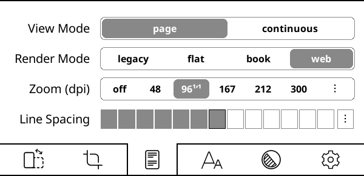
閱讀模式：切換到頁面連續模式，可以像瀏覽網頁一樣滑動閱讀書籍。該模式更適合配備非電子墨水螢幕（LCD、OLED）的閱讀裝置。在頁面連續模式下，頁面的頂部和底部頁邊空白將被裁切，因此首行和末行文字可能會被裁掉。啟用頁面重疊可以避免這一問題：
繪製模式：該選項決定 KOReader 如何呈現頁面。預設設定為網頁且通常無需改變。當某本書籍（或快取的網頁）使用了複雜排版（指定了頁面寬度或頁邊距，使用了負邊距或浮動元素等），導致版式錯亂或內容超出螢幕時，可嘗試其他繪製模式。
縮放（dpi）：該選項可視為文件的全域縮放比例（不會影響字型大小）。在預設設定 96 dpi 下，書籍中的圖片將以原始尺寸呈現。簡單來說，該選項可以在放大圖片的同時保持文字大小不變。
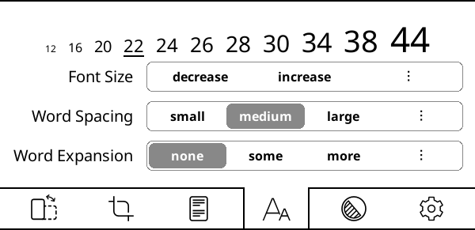
文字間距與文字擴充兩項設定是彼此關聯的，它們共同決定文字在左右對齊下的樣式。文字左右對齊時字之間的間距會被拉大，以便每行文字的左右邊緣都能與頁面邊緣對齊。由於每行中的字數不是相同的，左右對齊會使用擠壓或拉伸文字來填充滿一行。
文字間距：為容納更多文字，一行文字中的空白允許被壓縮的程度。該選項不會影響文字，只會改變文字的間隔。
文字擴充：當一行文字中有太多空白時，將這些空白分拆到字母之間而使單詞被拉伸的程度。該選項將影響單詞的樣式。若不希望單詞被拉伸，請將該選項設定為無。
請自行探索各種選項組合，讓文字呈現自己喜歡的樣式，然後在各選項對話方塊中將所選設定儲存為預設值。
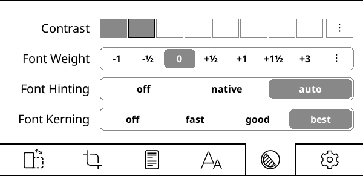
對比和字重影響文字筆畫濃淡。這兩個選項都可以讓文字呈現某種樣式，但它們的技術原理不同。當然，這兩項可以同時生效。
兩個選項間的區別可以這樣概括：
+ 不改變字型寬度，不影響書籍總頁數
+ 無需重新繪製書籍，調整速度快
- 在 LCD 或低 DPI 螢幕上可能影響觀感
+ 如果已安裝，將使用適當字重的字型
+ 在 LCD 和低 DPI 螢幕上觀感更佳
- 需要重新繪製字型，調整速度慢
字型微調是根據裝置螢幕像素陣列調整文字以實現最佳可讀性的功能。原生選項將使用字型內建的微調規則；自動選項使用 FreeType 的微調演算法。自行安裝的字型檔案包含的微調規則可能有問題，因此自動是更穩妥的選擇。另外，自動選項在處理 CJK 字元（東亞文字）時表現更好。請自行探索目前裝置適合的選項。
字距調整是調節特定字母組合之間的間距以提升視覺效果的功能。預設的最佳選項可能會拖慢書籍開啟速度（受閱讀裝置效能影響），但對連字（如下圖所示）、連筆阿拉伯字形及某些書體的支援更好。若閱讀裝置效能較差可改為較好選項，在保證拉丁字母書體正確顯示的前提下提升裝置回應速度。
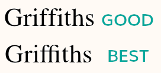
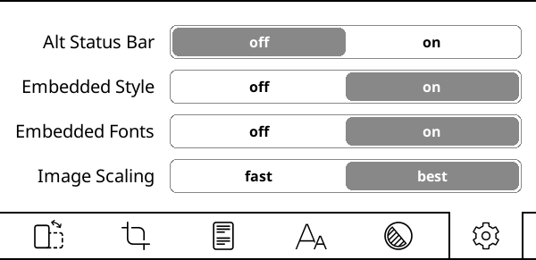
頂部狀態列可啟用另一種狀態列，但僅適用於 EPUB、HTML、DOCX、RTF、TXT 等可重排文件。啟用後，可透過下列路徑詳細設定頂部狀態列：
內嵌樣式及內嵌字型決定 KOReader 是否使用出版方在書籍中內建的排版樣式和字型來繪製頁面。這些選項通常是開關形式，可透過下列路徑更精細地調整頁面表現：
圖片縮放決定書籍中的插圖如何呈現。最佳選項可獲得更好的觀感，但會拖慢閱讀裝置。
根據開啟的檔案格式不同，KOReader 的使用者介面及設定選項可能會有所差異。KOReader 支援的檔案格式大致可分為兩類：
- 固定版式文件（PDF、DJVU、圖片檔案等）
- 可重排文件（EPUB、HTML、DOCX、RTF、TXT 等）。
KOReader 包含眾多功能，因此擁有複雜的選單系統，可使用選單搜尋功能快速尋找特定設定項目。若使用者對某項設定的名稱有印象卻不知道如何找到它，可藉助該功能搜尋：
此外，可為這項功能指定手勢，或將它加入快速選單以便快速取用。
在底部選單中點選並按住選項名稱，就可以看到該選項的說明。 |
|
使用者介面的語言可透過下列路徑更改： |
|
若要調整使用者介面的大小，可使用 DPI 設定： 你可以從選單中選擇一個值，或選擇自訂 DPI 後輸入一個值微調：更高的 DPI = 更大的介面。請注意，底部欄中還有一個縮放（DPI）設定。該設定僅與文件相關。你可以在下一節中找到相關說明。 |
長按某一選項或選單項目（如字重、行距等）可將其目前設定指定為預設值，僅對之後開啟的書籍生效。之前開啟的書籍將保持原設定。選單中的預設值會以星號（★）或指標周圍的黑色邊框標示，如下圖所示： 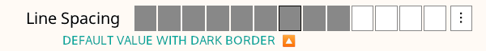 |
使用向下滑動手勢即可關閉歷史記錄、目錄、閱讀統計等全螢幕對話方塊。（書籤管理器是個例外，但可以透過指定其他多指手勢來關閉） |
有兩種手勢可用來螢幕擷圖：一種是沿對角線長劃，另一種是用雙指同時點選螢幕的任一組對角。第二種手勢可用於瀏覽圖片時螢幕擷圖。如果閱讀裝置配有實體鍵盤，還可以按下 Alt+Shift+G 組合鍵來螢幕擷圖。 |
若想隨機跳到書中的某一頁，可以使用跳到隨機頁面這項操作，並將它指定給任何手勢。它位於手勢管理員器的閱讀器類別中。 |
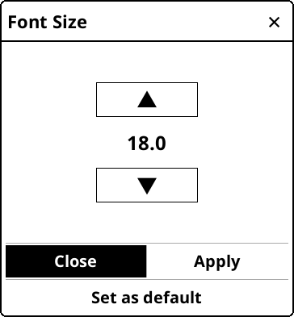 在包含如上圖所示調整箭頭按鈕的對話方塊中，你可以點選並按住箭頭按鈕，以更大的幅度變更數值。 你可以點選此類對話方塊（非全螢幕）視窗以外的位置來關閉它。 按住視窗標題並拖曳，即可移動此類對話方塊。 只要點選並按住視窗標題（當你想在調整數值的同時檢視下方文字時），就可以讓此類對話方塊變成半透明。 |
建立新資料夾 - 在需要選擇位置（雲端儲存、移動到封存外掛、匯出外掛）時，KOReader 會顯示一個類似我們的檔案瀏覽器的介面。如果你想在選擇時建立新資料夾：
|
KOReader 支援在 EPUB 和掃描的 PDF/DJVU 文件中查詢字典。要檢視字典定義或翻譯，只要長按某個字即可。 按住某個字會跳出對話方塊，你也可以在文件中搜尋該字詞的其他出現位置，或到維基百科查詢。 |
如果你想檢視目前日期，可以點選頂部選單中的時鐘圖示。 |
KOReader 有三種觸控捲動方式，可從這裡進入：
- 經典捲動：此模式的捲動方式與手機／平板電腦完全相同。
- 加速捲動：此模式允許你比經典捲動更快地捲動。你還可以在不抬起手指的情況下捲動多頁。捲動量與開始捲動後移動手指的距離成正比。
- 鬆手時捲動頁面：這種頁面捲動方式更適合電子紙裝置。與其他頁面捲動方式不同，該方式不會在捲動時持續刷新頁面。它的運作方式與經典捲動類似，但不會顯示中間過程，用手指滑動後鬆手，頁面會直接跳到對應位置。如果書中有圖片或表格，而你想完整檢視，這個模式特別適合用來重新調整頁面的顯示位置與檢視範圍。
這項實用的功能就像瀏覽器中的返回按鈕。當你透過快覽工具、書籤清單、書籍地圖等跳到書中的其他部分時，KOReader 會記住你先前的位置。例如當你沿著書中的內部連結或參考資料跳轉時，這就很好用，只要點選一下就能回到原本的位置。你可以從這裡開啟這項功能：
在該選單中也可往前跳。該功能預設被指定給 多指滑動手勢，使用者可另行指定給另外的手勢（如點選螢幕一角），或將該功能列入快速選單。
KOReader 通常會對包含圖片的頁面進行完整刷新（你可以看到黑色閃爍）。這是為了清除上一頁的殘留與殘影。但依據你的裝置和個人喜好，這可能不是必要的。你可以在此處停用這項自動刷新行為：
如果使用者介面出現黑色閃爍，你也可以從這裡停用：
在 KOReader 中瀏覽文件有不同的方法，各有優缺點。你可以使用：
- 快覽工具
- 書籍地圖
- 頁面瀏覽器
快覽工具是非常有用的定位工具，可用來：
- 透過直接點選閱讀進度列上的位置，或輸入頁碼跳至指定頁面
- 章節導覽
- 書籤導覽
叫出快覽工具的方法：
- 長按螢幕底部的狀態列區域
- 從這個選單：
- 你可以為它指定一個手勢
- 你可以將其新增到快速選單中
先來快速看一下下方的示意圖。可以看到快覽工具有兩種樣式，兩者功能相同，只差在尺寸：
- 全尺寸快覽工具：這是安裝 KOReader 後預設啟用的快覽工具。它的尺寸比精簡快覽工具更大，因此上面的各種按鈕更易點選。該工具會顯示在螢幕中間。
- 精簡快覽工具：這是預設快覽工具的精簡版本。它的尺寸更小巧，會顯示在螢幕頂部或底部，因此不像預設工具那樣遮擋螢幕，在諸如劃線文段時會更便於使用。
若要使用精簡快覽工具，可點選如下選單中的頂部或底部選項：
提示 兩種快覽工具都可以移動：按住工具上的空白區域並拖曳即可。此外，長按工具上的空白區域可讓對話方塊變成半透明，但僅限於初始位置時有效；移動過後再長按，則會把對話方塊移回初始位置。
接下來回到示意圖。你會看到有些按鈕上有藍色和橙色兩種不同顏色的說明，代表該按鈕有兩種功能：一般按壓與長按。一般按壓會執行藍色功能，按久一點則會執行橙色功能。
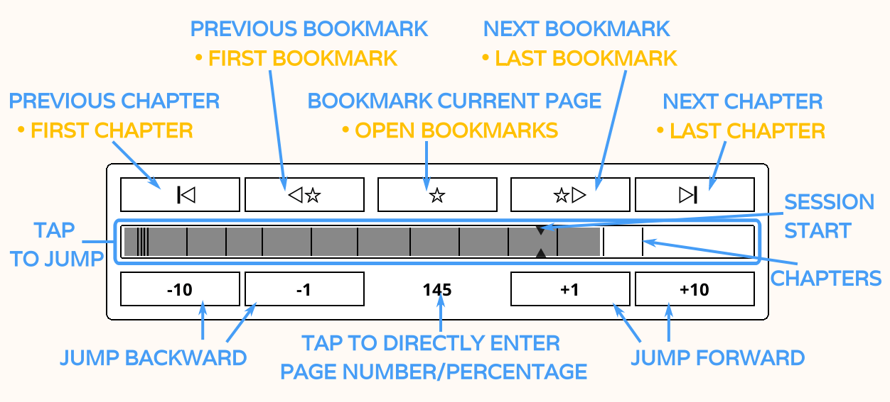
圖中編號項的功能說明（粗體代表長按時的功能）：
- 跳到上一章開頭/跳到本書第一頁
- 跳到上一個書籤/跳到本書第一處書籤
- 將目前頁新增為書籤/開啟書籤對話方塊
- 跳到下一個書籤/跳到本書最後一處書籤
- 跳到下一章開頭/跳到本書最後一頁
- 依所示頁數往回跳（－）或往前跳（＋）
- 該數字為目前頁碼。點選將開啟對話方塊，可輸入頁碼或百分比直接跳轉。長按則會回到你開啟快覽工具時所在的頁面。這項功能在你想快速檢視書中其他地方、再回到原本閱讀位置時特別有用。
- 這是閱讀進度列。細線是標示各章節起始處的章節標記。點選閱讀進度列的任意位置，就會跳到書中對應的位置。小箭頭是工作階段起始箭頭，用來標示你在本次工作階段中開始閱讀這本書的位置；切換書籍時，這些箭頭會重設。
- 此按鈕僅出現在精簡快覽工具中，功能與長按編號 7相同，可讓頁面回到開啟快覽工具時所在的頁碼。這項功能在你想快速檢視書中其他地方、再回到原本閱讀位置時特別有用。
提示 若要隨機跳到某一頁，KOReader 提供跳到隨機頁碼的操作項目，你可以為它指定一個手勢。該項目位於手勢管理員器的閱讀器類別中。
KOReader 可以在快覽工具與閱讀進度列上顯示文件中的章節分界。
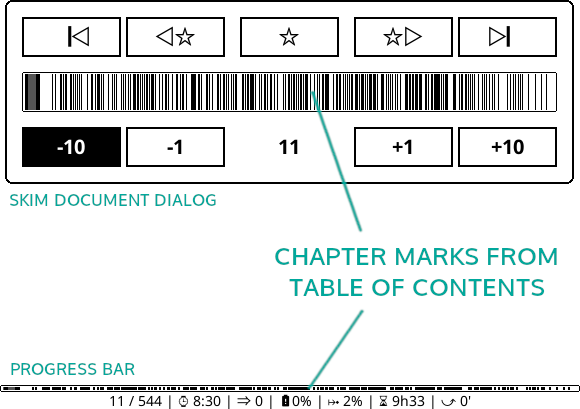
如果你的文件有太多層標題，章節標記可能會像上圖一樣顯得擁擠。你可以透過下列路徑調整顯示的目錄標記層級深度：
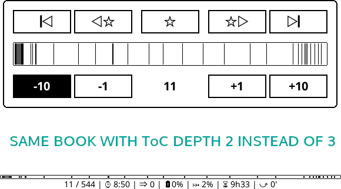
你還可以將此簡化的目錄用於：
- 章節標題（如果顯示在狀態列上）
- 章節導覽
- 剩餘閱讀時間估算
這些選項位於同一選單中。
如果你的文件沒有目錄，可以啟用替代目錄。啟用此設定後，KOReader 會根據文件標題（如果可用）或 EPUB 中的個別 HTML 檔案建立目錄。長按此選單項目可取得更多資訊：
你可以在本指南的下列相關章節，找到 KOReader 提供的目錄工具的更多資訊：目錄工具
書籍地圖是 KOReader 一項強大而獨特的功能，對於快速掌握一本書的全貌非常有用。例如，如果你透過跳過某些部分、稍後再讀的方式非線性地閱讀一本書，就很難追蹤自己的進度。書籍地圖能讓你一眼看出書中哪些部分已經讀過。
此外，你還可以：
- 檢視你在每個頁面上花費了多少時間（如果啟用了閱讀統計外掛）
- 檢查哪些頁面有書籤、劃線和筆記
- 像快覽工具一樣，直接跳到書籍的任何部分
你可以透過選單開啟書籍地圖，也可以指定手勢，方便快速開啟：
當你在閱讀一本書時第一次開啟書籍地圖，它會處於格線檢視模式，把所有章節放進單一螢幕，讓你對書籍內容先有最好的整體概覽。想取得詳細的使用說明，請點選左上角的資訊圖示。你可以點選右上角的 X，或用任何多重滑動手勢（上-下、左-右等）關閉書籍地圖。
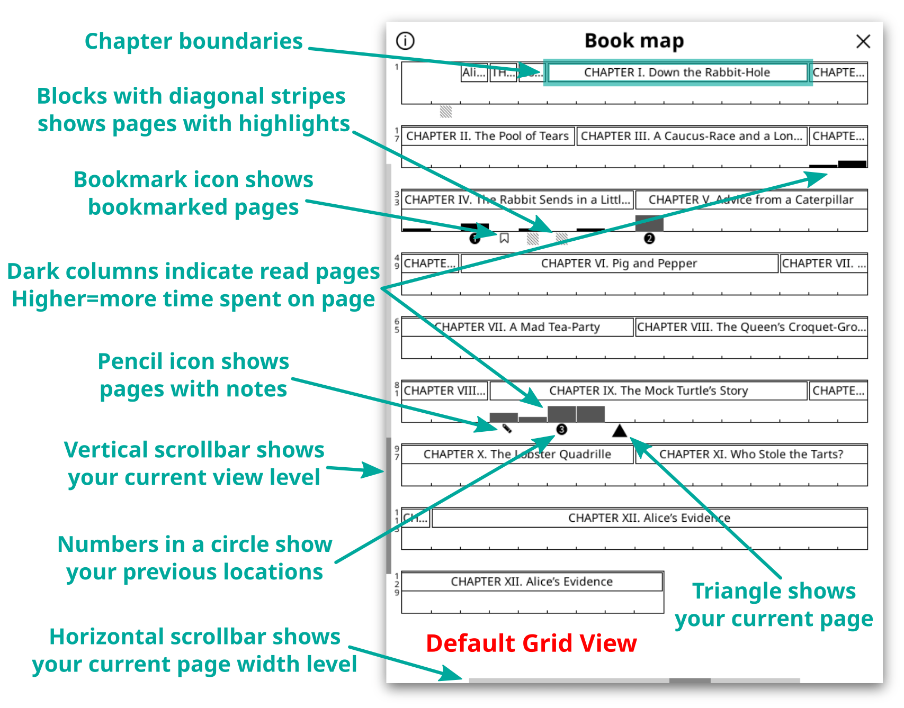
- 章節邊界
- 黑色條表示已讀頁面。較高的條表示在該頁花費的時間更多。
- 顧名思義，書籤圖示表示已加書籤的頁面。
- 條紋方形圖示表示含有劃線的頁面。
- 鉛筆圖示顯示帶有筆記的頁面。
- 圓圈中的數字表示你先前的閱讀位置。當你從選單選擇返回前一位置時，會依數字順序逐一回到這些位置。
- 三角形顯示你目前的頁面。
- 垂直捲動條顯示你目前的檢視級別。
- 垂直捲動條顯示你目前的頁面寬度級別。
你可以透過更改以下選項自訂書籍地圖：
- 首先，嘗試沿螢幕底部邊緣向左滑動和向右滑動，以調整代表頁面的分欄寬度，並觀察它如何更改地圖的比例。
- 然後，嘗試沿螢幕左邊緣向上和向下滑動，以更改章節標題深度並切換到平面檢視。請參閱下面的範例。
除了上面預設的格線檢視外，你還可以在左側看到平面檢視，在右側看到沒有章節標題的格線檢視。請注意檢視之間左垂直捲動條的變化。如果你想切換回預設檢視，你可以長按左上角的資訊圖示。
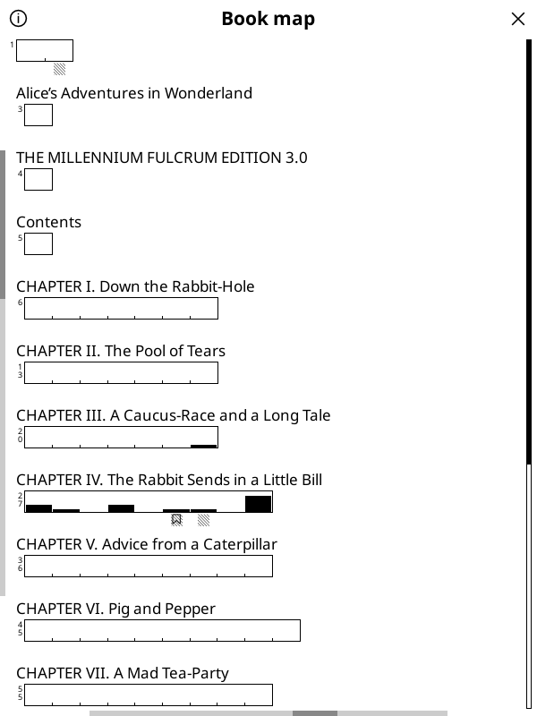
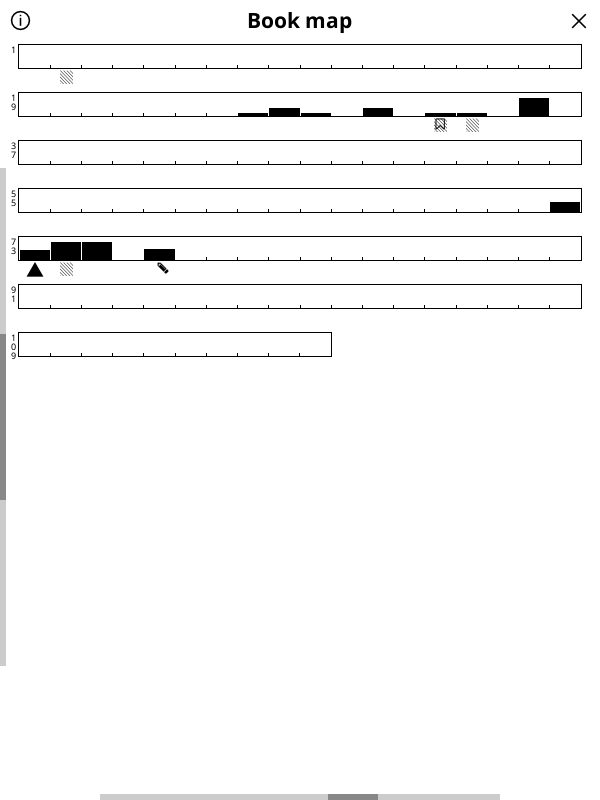
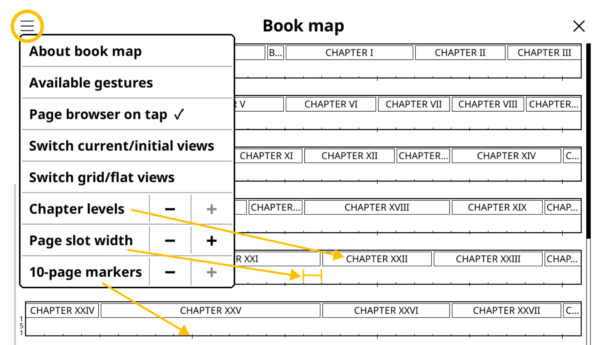
當你點選書籍地圖螢幕上的選單圖示時，你會看到上面的選單。選單選項說明如下：
- 關於書籍地圖：書籍地圖用法與圖示的簡短說明。
- 可用手勢：可用來更改書籍地圖設定的手勢，無須使用此選單。
- 點選時開啟頁面瀏覽器：勾選此選項後，在書籍地圖中點選某一頁會開啟頁面瀏覽器，顯示你所選區域的總覽。若停用此選項，在書籍地圖中點選則會直接前往該頁。但請注意，視螢幕尺寸、觸控靈敏度、點選準確度等因素而定，你可能會被帶到鄰近的頁面。
- 切換目前/初始檢視：如果你自訂了書籍地圖檢視，點選此項目可在預設檢視和自訂檢視之間切換。
- 切換格線/平面檢視：在單獨的章節或連續的章節檢視之間切換。
- 章節級別：更改章節/子章節級別的深度。
- 頁面槽寬度：使每個頁面槽更寬或更窄。
- 十頁標記：該選項共有三檔，第一檔將在頁碼格上每隔十頁在第十頁新增豎線標記；第二檔將會加長標記使其更明顯；第三檔將每隔五頁在第五頁上新增次級標記。
頁面瀏覽器以格線形式顯示書頁縮圖，讓你像瀏覽相簿一樣在頁面之間瀏覽。你可以點選書籍地圖或從選單開啟頁面瀏覽器，也可以指定手勢方便快速開啟。
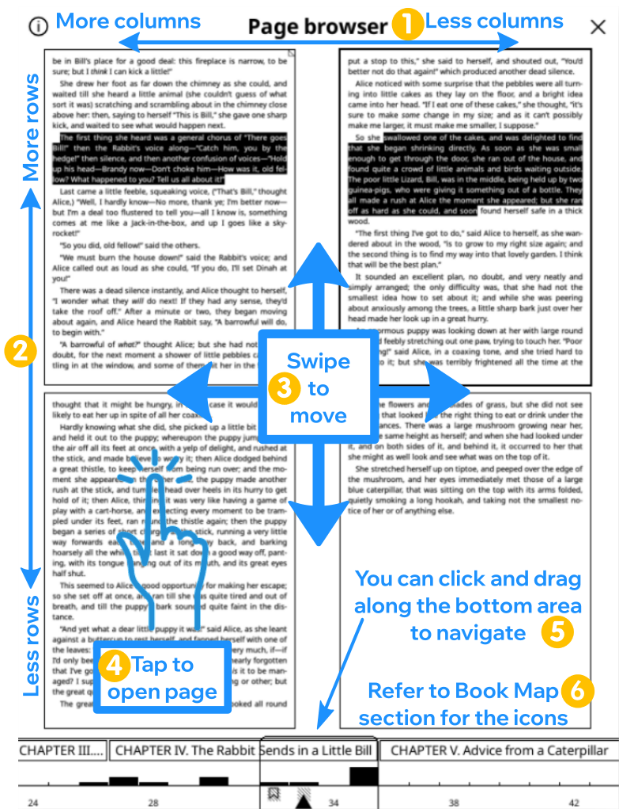
下方展示了頁面瀏覽器的用法。也可透過點選介面左上角的漢堡狀選單鍵檢視功能介紹。長按該按鍵還可顯示或隱藏底部定位欄中的章節標題。
- 在頂部邊緣向左滑動或向右滑動可增加或減少書頁縮圖的分欄的數量。
- 在左側邊緣向上滑動或向下滑動可增加或減少書頁縮圖行數。
- 在中間區域滑動可移動顯示的縮圖。向上滑動或向下滑動將捲動一行（在圖示中對應 2 塊縮圖），向左滑動或向右滑動可翻過整個螢幕（在圖示中對應 4 塊縮圖）。
- 點選縮圖可在閱讀檢視中閱讀該頁。
- 點選底部刻度條區域的任一位置，即以該頁為中心顯示縮圖。在底部向左滑動或向右滑動將跳過一整塊刻度條對應的頁數。
- 底部區域的圖示與書籍地圖中使用的圖示相同，相關說明請見該節。
透過漢堡狀選單鍵還可為書籍地圖和頁面瀏覽器套用不同底紋的替代主題。該主題對章節標題交替上色，使章節邊界在書籍地圖和頁面瀏覽器中更易辨識。但該主題使用的灰色會觸發 e-ink 全螢幕刷新，可能會干擾閱讀。請自行嘗試是否需要啟用。
一些電子書可能沒有合適的目錄（ToC）。根據書籍的製作情況，可能會遇到下列目錄相關問題：
- 書籍缺少目錄，因此你無法在章節間跳轉或檢視剩餘閱讀時間
- 書籍包含的目錄用處不大，因為目錄中的章節標題存在錯誤或缺失
KOReader 提供一些功能，可以在你閱讀這類目錄有問題的書籍時派上用場。
請注意替代目錄無法套用於 PDF、DJVU 等固定版式文件，因為建立替代目錄功能依賴於文件的 HTML 標籤。自訂目錄及自訂隱藏頁功能則可用於所有檔案格式。
第一項功能是替代目錄，你可以在下列路徑找到：
替代目錄會嘗試從書籍的標題（EPUB 檔案中 H1 到 H6 的 HTML 標籤）建立目錄。如果你的書籍不含任何標題，它會嘗試依據文件片段（EPUB 書籍中的個別 HTML 檔案）建立目錄，這些項目會指向每個檔案的開頭。
可以在下列選單中選擇替代目錄所包含（或忽略）哪些章節標題層級：
利用自訂目錄功能可以從書籍內頁中選定文段來組成標題。此目錄只能包含一個層級，因此無法列入子章節標題。要建立自訂目錄，請先在下列路徑中啟用自訂目錄：
啟用自訂目錄後，使用者介面將出現新的選單項目，用以選擇章節標題。可以從以下兩種途徑新增章節：
- 從劃線建立：閱讀書籍時，選取一段文字（就像要劃線一樣），或在某個字上長按。快顯選單中會出現開始目錄章節選項。點選該項後，會出現對話方塊要求你輸入章節標題，你選取的文字會自動填入。視需要修改標題後，點選「建立」即可。
- 從頁面瀏覽器建立：請依下列路徑開啟頁面瀏覽器
長按要作為章節開頭的頁面縮圖，然後從快顯選單中選擇開始目錄章節。接著會出現對話方塊，要求你輸入章節標題。
當完成自訂目錄的建立、不再需要這些額外按鈕，可以透過取消勾選下列選項來將其停用：
建立自訂目錄並不會更動書籍原本的目錄。在同一份選單中還可清除已建立的自訂目錄（比如要建立一份新的）。要回到原目錄，可透過與啟用自訂目錄時相同的方式將其停用。請注意，停用該功能並不會刪除已建立的自訂目錄，之後仍可切換顯示原目錄及自訂目錄。
有些書籍或文件可能附有大篇幅的註腳或參考書目。比如一本 250 頁的科學類書籍最後 50 頁全是附錄、專業術語索引及參考文獻。通常情況下這些頁面仍會被計入閱讀進度列和閱讀時間統計。但這些章節大多只作為參考，並不需要逐頁閱讀，因此你可能希望將其排除，讓剩餘頁數和預估閱讀時間更準確。再比如一本選集中包含了一些已經讀過的篇章。自訂隱藏頁功能可以將這類章節排除出去。
請瀏覽下方圖示大致瞭解操作過程，詳細步驟列於圖片下方：
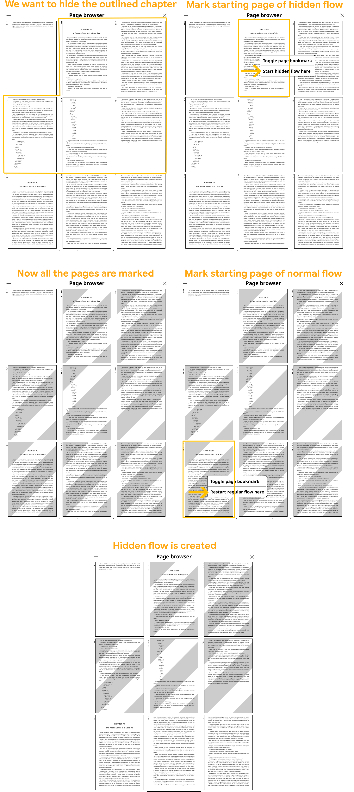
透過建立隱藏頁來排除部分章節：
- 轉到要排除章節的起始頁
- 按照下列路徑進入頁面瀏覽器：
- 找到要排除章節的起始頁，在頁面縮圖上長按，從快顯選單中選擇設定為隱藏頁的起點。
- 此時可以看到從所選頁面開始的章節全部被灰色陰影覆蓋。
- 接下來，轉到要排除段落的最後一頁。可以透過頁面瀏覽器或書籍地圖、快覽工具等定位頁面。
- 在被排除章節的結束頁上再次進入頁面瀏覽器。
- 找到要隱藏章節的結束頁，然後長按下個頁面的縮圖。從快顯選單中選擇標記為正文頁碼段的起始點。可以看到從所選頁面開始的章節不再被灰色陰影覆蓋。
頁碼段被隱藏後的表現：
依照上述步驟建立隱藏段落後，KOReader 的處理方式就像你把紙本書的某一部分剪掉一樣：
- 翻頁時將直接跳過隱藏頁。例如將第十章標記為隱藏頁後，從第九章的最後一頁繼續翻頁將直接顯示第十一章。
- 頁碼計數將無視被隱藏的頁碼段繼續增加。
- 被隱藏的段落不會顯示在你的閱讀進度列上（但請見下方說明），也不會計入閱讀時間。不過這些頁面仍會出現在快覽工具中。
- 指向被隱藏頁面中位置的連結仍然有效。你也可以從目錄、書籍地圖、頁面瀏覽器和快覽工具前往這些段落。
如上所述，隱藏頁將不會被計入閱讀進度列。但如果使用上一條提到的幾種方式前往隱藏頁的某一頁，閱讀進度列將暫時變為該隱藏頁的章節閱讀進度列。可以將此想像成閱讀進度列放大到了被隱藏的章節。當翻到隱藏頁最末頁、或使用其他頁面定位工具離開被隱藏的章節，閱讀進度列將恢復為顯示全書閱讀進度，此時自訂隱藏頁將從進度列上消失。
移除並清理被隱藏章節：
隱藏頁可在頁面瀏覽器中逐一恢復，方法與設定隱藏時一致。還可以透過下列選單項目一次性全部恢復：
在透過標記頁面為隱藏頁起始處或正文頁碼起始處來設定隱藏頁時，部分已經設定隱藏的頁碼可能不再生效。例如在隱藏頁起始處的早幾頁再次執行標記為隱藏頁起始處操作，之前設定的標記將不會被包含在內。基於實用考量，這些重疊或失效的標記仍會被保留。再以上面的例子來說，當新設定的隱藏頁最末頁位於先前已失效的隱藏頁區域內，先前失效的隱藏頁將再次生效。如果這些標記相互干擾，或對隱藏頁的設定結果已經滿意，可以將失效的隱藏頁標記清除：
在某些閱讀器應用程式中，當你更改設定（例如用於書籍的字型）時，它會全域更改。這意味著，如果你將預設字型更改為 Verdana，你接下來開啟的任何書籍，包括你已經在閱讀的書籍，都將以這種 Verdana 字型顯示。
KOReader 的方法與此不同。我們儲存每本書的外觀設定。這使你可以靈活地更改目前書籍的設定，而不會影響其他書籍。例如你有一些奇幻小說，你可以將字型更改為中世紀風格的字型，這個改變將只套用於這些書籍。或者你可以將一些書籍設定為以橫向或雙欄模式開啟。
要變更全域設定，請長按選項或選單項目（字型粗細、行距等），將其值設為預設值。正如我們上面所說，這個新值只會套用到往後開啟的書籍，先前開啟過的書籍會保留原本的設定。你可以從選單中的星號（★），或指示器周圍的黑色邊框來辨識預設值，如下所示：
因此，當你調整文件預設值，如預設行間距或預設對比時，此值將僅用於更改後開啟的新文件。你已經開啟的書不會改變。
但如果你想讓它們也改變呢？例如，如果你更改了預設的字型，你可能會將字型粗細和行間距調整為更適合此新字型的值。你對文字的外觀很滿意，現在你希望你所有的書都是這樣的。使用此功能，你不需要在所有已開啟的書籍中手動更改這些值。
你可以透過選擇以下選項輕鬆地將這些更改套用於已開啟的書籍：
點選該選項後，目前書籍的設定將會改為你最近設定的預設值。無需擔心，該選項僅改變書籍外觀，閱讀位置、劃線、筆記和書籤會被保留。
當你根據自己的喜好調整一本書時，例如透過更改行間距、字型對比等，你可以一次將所有更改儲存為預設值。然後，你可以按照上文所述，使用將文件設定重設為預設值選項將這些設定套用於其他書籍。
你可以透過選擇以下選項將更改儲存為預設值：
這個強大的功能允許你將所有底部選單設定 + 字型類型儲存為設定檔。這意味著你可以為不同的條件或書籍類型設定不同的設定組，你可以一次套用這些設定，而不是每次手動更改設定。
例如，你可以建立：
- 雙欄設定檔，帶有雙欄小尺寸文字，橫式顯示和最小邊距
- 夜間閱讀設定檔，更大的無襯線字型和更高的對比，以便在低光下顯示更清晰的文字
- 停用樣式設定檔，在結構不良的書籍中停用內建樣式和內建字型
根據你的喜好調整設定後，你可以透過以下方式從中建立設定檔：
使用你的設定建立設定檔後，你有許多選項可以將其套用於另一本書：
- 你可以從設定檔選單套用設定檔
- 你可以為它指定一個手勢
- 你可以將其顯示在快速選單中
點選此處前往本指南的快速選單與設定檔部分。
KOReader 支援被廣泛使用的 TrueType (.ttf) 和 OpenType (.otf) 字型格式。這類副檔名的字型檔案可直接複製到閱讀裝置中的 /koreader/fonts/ 資料夾中。更多資訊請查閱維基頁面。
啟動時，KOReader 會從字型詮釋資料／資訊彙整出可用的字型，並依字型系列與字重分類。這表示你可以加入同一字型的不同字重與變體，KOReader 會嘗試選用最合適的一個。由於字型系列資訊取自詮釋資料，因此把字型複製到裝置時，字型名稱並不重要。重新啟動 KOReader 後，安裝的字型即可使用。
這裡有一些在電子墨水螢幕上看起來不錯的字型範例。你可以在Google Fonts網站上找到更多內容：
襯線體：
無襯線字型：
等寬字型：
如果你打算使用自己的等寬字型，可能你已經有一個最喜歡的字型了，所以我們在這裡不提供任何範例。但是你可以在programmingfonts.org上找到並比較許多等寬字型
如果你的書籍包含使用等寬字型的部分（如程式設計書籍），即使等寬文字的字型大小在技術上與書中其餘文字相同，看起來仍可能比例失衡。這是因為不同字型的度量值不同。KOReader 有一個選項，可讓你調整等寬字型的相對大小來修正這個差異：
在這裡，你可以透過調整預設字型大小的百分比來增加或減少等寬字型的字型大小。
在以 HTML/CSS 為基礎的文件（如 EPUB）中，書籍可以指定使用字型家族，而不指定特定的字型名稱。這些字型家族可以是襯線體（Serif）、無襯線體（Sans-Serif）、等寬體（Monospace）、草書體（Cursive）、花體（Fantasy）、表情符號體（Emoji）、仿宋體（Fang Song）和數學體（Math）。例如，在一本書中，正常的文字可以用無襯線體顯示，而對話則用襯線體顯示。KOReader 通常對所有這些字型家族套用你的預設字型，但等寬體（Monospace）和數學體（Math）除外（這兩者由文字節點的樣式決定，例如 'font-family: serif'）。如果你希望這些字型家族看起來有所區別，你可以在這裡為它們指定特定的字型：
要更改目前書籍的字型家族，只需點選所需的字型名稱。如果你想為所有書籍設定此項目，請長按將其設定為預設設定（★）。如果某本書濫用了此字型家族功能，以至於幾乎不使用預設字型，則可以透過取消勾選該關聯來停用該字型家族。
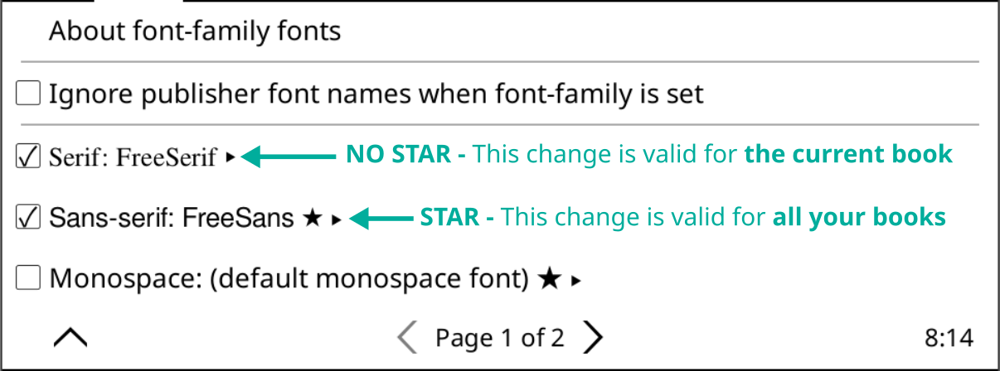
如果你經常在字型之間切換（比如程式設計書籍用等寬字型，小說用襯線體），有個更省事的做法，不必每次都進選單。你可以為字型和所有字型相關設定（如行間距、對比、粗體等）建立設定檔，並將這些設定檔新增到快速選單中。這樣只需一個手勢，你就可以開啟字型選單並更改字型，如下圖所示：
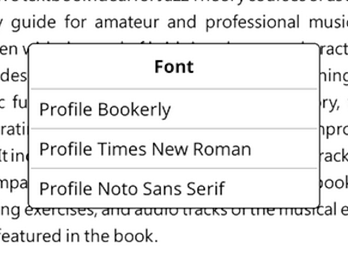
檢視本指南的快速選單與設定檔部分，瞭解如何執行此操作。
!!! 進階
KOReader 的樣式微調功能可讓你修改 KOReader 顯示書籍的方式。我們不會在這裡完整講一遍 CSS 課程，只想讓你瞭解基本概念，這樣當你看到某個樣式微調時，至少能大致知道它的作用。
我們可以將 EPUB 文件描述為 HTML 檔案 + 一些 CSS 規則。這些 CSS 規則決定了書的不同部分（標題、粗體文字、引言等）在閱讀程式中的呈現方式。透過樣式微調，你可以新增規則，及（或）覆蓋書籍中內嵌、由出版方撰寫的規則，藉此更改書籍的呈現方式。
我們用一個樣式微調範例來說明：
img { width: 10px !important; height: 10px !important }
用白話來說，這條規則的意思是：「忽略圖片的原始尺寸，讓這本書裡所有圖片都變成 10 像素寬、10 像素高。」因此，如果你把這個樣式微調加入 KOReader，你書中的所有圖片都會顯示得很小。
現在讓我們逐項解釋這個調整：
- img - 這是一個 CSS 選擇器，目標是書籍中的所有 img（圖片）元素。
- { width: 10px !important; height: 10px !important; } - 這是宣告塊。它包含將套用於所選 img 元素的樣式。
- width: 10px !important; - 第一部分將目標 img 元素的寬度設定為 10 像素。!important 宣告是一個覆蓋開關，可確保你的寬度值優先於套用在這些圖片上的任何其他現有寬度宣告。
- height: 10px !important; - 這部分將目標 img 元素的高度設定為 10 像素。同樣地，!important 是一個覆蓋開關，可確保你的高度值優先於套用在這些圖片上的任何其他現有高度宣告。
總之，這個 CSS 規則的作用是將書中所有 img 元素設為固定的 10 像素寬、10 像素高，並忽略其原始樣式。
這些是一些實用的樣式微調，你可以直接使用，也可以依自己的喜好修改。下一個標題會說明如何在 KOReader 中使用它們。
- 在書籍中的每個標題上方新增分隔線：
H1, H2, H3, H4 { border-top: 2px solid black; }
- 在標題上方新增一些邊距：
H1, H2, H3, H4 { margin-top: 2em !important; }
- 或者，如果書的標題上方的邊距過多，請將其刪除：
H1, H2, H3, H4 { margin-top: 0 !important; }
- 在段落之間新增一個小間隙，使文字更具可讀性：
p + p { margin-top: 0.5em !important; margin-bottom: 0.5em !important; }
- 停用 EPUB 中的所有圖片：
img { display: none !important; }
-
使圖片非常小，而不是停用它們：
img { width: 10px !important; height: 10px !important }
-
使電腦科學書籍中的程式碼區塊更整潔、更易讀（在這裡你可以看到一個範例）：
pre,code { font-size: 0.6em !important; line-height: 1.8em !important; background-color: #eee !important; margin: 1em 0 !important; padding: 1em 0 !important; }
好的，現在我們已經瞭解了什麼是樣式微調。但我們如何使用它們呢？KOReader 中有三種類型的樣式微調：
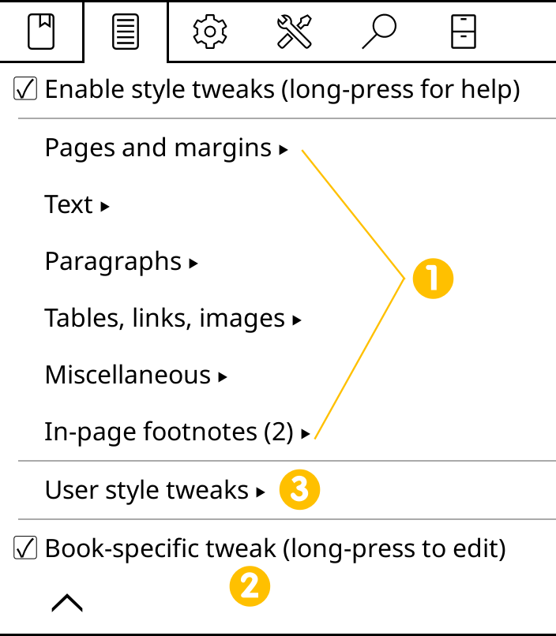
這個標題是新增的，上方和下方的螢幕擷圖也是。還有需要補充的嗎？
這些調整都內建於 KOReader。它們最容易使用，因為只要從選單啟用即可，不需要撰寫任何 CSS 程式碼：
它們有很多種類。若要僅對目前書籍應用調整，請勾選核取方塊。如果你想獲得更多關於這個調整的資訊，或者對所有的書啟用它，請長按它的名稱。將出現一個對話方塊：
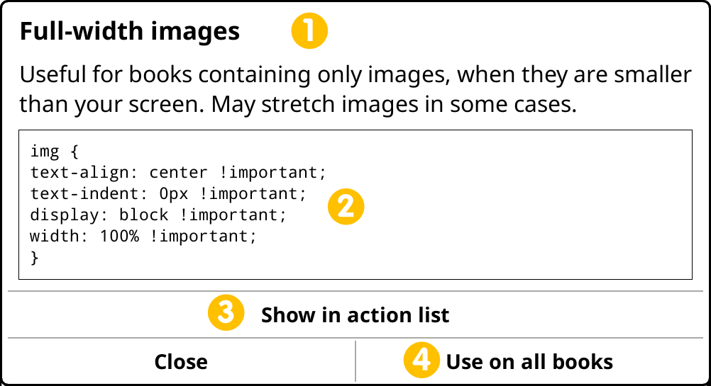
- 此區域顯示該微調的名稱與說明
- 此框顯示了調整的 CSS 程式碼。你可以點選此區域將程式碼複製到剪貼簿。然後，你可以在你的僅本書調整中貼上和修改此程式碼，如下一標題所述。
- 在動作清單中顯示按鈕允許你使用手勢切換此調整，或將其新增到快速選單中。有關更多資訊，請參閱下面的標題「如何有效使用調整」。
- 在所有書籍上使用按鈕為所有書籍啟用此調整。選單中其名稱旁邊將出現一個星號（★），表示此調整將套用於所有書籍。你可以使用相同的步驟停用此功能。
正如其名，這類微調僅對你建立它們時所在的那本書籍有效。此功能在你需要測試微調效果，或明確只需對目前書籍做特定修正時更為實用。建立此類微調後，如果你認為其他書籍（例如，來自同一出版方的書籍）也需要此設定，你可以將其轉換為使用者樣式微調，我們將在下面解釋。
要建立僅本書調整，請使用下列路徑中的整合編輯器：
提示 編輯器的底部工具列有一個 CSS 選單，內含許多實用的 CSS 語法與屬性。開啟這個選單時，請先閱讀長按取得說明的提示。此外，長按選單中的 CSS 項目也可以看到說明。
這組調整在建立方式上與之前的調整不同。與之前的類型不同，它們也不限於一本書。它們可以在全域範圍內套用於你的所有書籍。
大致流程如下，我們將詳細說明：
- 建立使用者調整檔案
- 傳輸到你的裝置
- 從選單中啟用
1. 建立使用者調整檔案：
使用者樣式微調實際上是一個副檔名為 .css 的普通文字檔案。你可以這樣建立此檔案：
- 在你的電腦上
- 在你的裝置上，前提是裝置上有文字編輯器（如基於 Android 作業系統的裝置）
- 在 KOReader 的整合文字編輯器中，你可以在外掛裡找到它
你可以將上面提到的範例複製/貼上到你的檔案中。
2. 將檔案傳輸到你的裝置：
建立包含 CSS 規則的檔案後，將其儲存或傳輸到 KOReader 安裝下的 styletweaks 資料夾中。為檔案指定描述性名稱，因為檔案名稱將是 KOReader 選單系統中微調的標題。你可以在檔案名稱中使用底線「_」，它們將在選單中被視為空格。你需要在傳輸檔案後重新啟動 KOReader，以便它可以載入它們。
2. 啟用調整：
重新啟動後，開啟一本書並轉到此選單：
現在你應該在清單中看到你的調整，旁邊有一個核取方塊。要將你的調整僅套用於目前書籍，請勾選核取方塊。如果你希望對所有書籍啟用此調整，請長按其名稱。將出現一個對話方塊。點選選單項目在所有書籍上使用。一個星號（★）將出現在選單中其名稱旁邊，表示此調整將套用於所有書籍。你可以使用相同的步驟停用此功能。下面是一個範例：
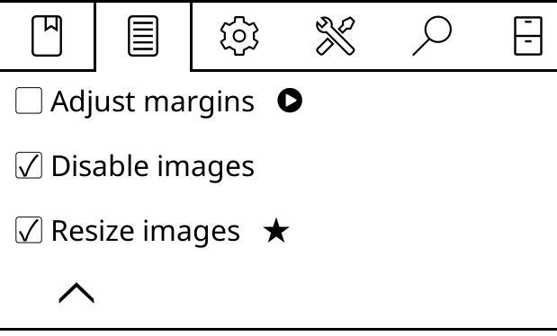
在上圖中，我在 KOReader 安裝下的 styletweaks 資料夾中有 3 個樣式微調檔案。第一個被停用，因為核取方塊為空。第二個選項僅對本書啟用，因為核取方塊已標記，但沒有星號。第三個選項適用於所有書籍（★）。
你可能會注意到，在第一個調整旁邊還有一個直角三角形圖示。這意味著可以使用手勢啟用此調整。這將在下一個標題中解釋。
在建立使用者樣式微調時，你可以建立多個調整檔案，每個檔案都修改了書的某些部分，如上圖所示。你可以有一個檔案用於標題，其他檔案用於修改段落、連結等。這種模組化的做法讓你可以依文件需求啟用不同的微調。
正如我們上面所說的，你可以從這個選單位置切換使用者樣式微調：
此外，我們還有更簡單的方法來切換你的樣式微調，而不是每次都去選單。
1. 你可以將手勢指定給調整
為此，首先我們必須將我們的使用者樣式微調新增到手勢操作清單中：
- 轉到使用者樣式微調選單，長按樣式微調
- 在對話方塊中，按下按鈕在動作清單中顯示
- 選單中樣式調整旁邊將出現一個直角三角形圖示
你可以在上面的範例圖片中看到它，在調整邊距樣式微調旁邊。現在，此樣式微調已新增到操作清單中。你可以在手勢管理員>可重排文件類別下找到它。它將在清單的末尾。
2. 你可以在快速選單中新增調整
要在快速選單中新增調整，首先必須將其新增到上述標題中描述的操作清單中。然後，你可以按照本指南快速選單部分的說明操作。
你甚至可以將這兩種方法結合起來，為你的樣式微調建立一個專屬的快速選單，然後將其指定給一個手勢。這樣只需一個簡單的手勢，你就可以存取所有的樣式微調，並根據需要啟用它們。
請注意，在某些書籍中，標題可能不在 <H1> 或 <H2> 元素中，而是在類似 <p class="tit123"> 的內容中。你可以透過檢查原始碼來尋找用於文字部分的選擇器。做法是：選取你感興趣的元素周圍的文字，然後從對話方塊中選擇檢視 HTML。在上面的範例中，你的樣式微調看起來像這樣：
P.tit123 { border-top: 2px solid black; }
而不是這樣：
H1 { border-top: 2px solid black; }
KOReader 提供了多種選項，可以像印刷書一樣做記號。書籤頁面的多項設定可以在下列路徑變更：
閱讀位置書籤：
可透過點選螢幕右上角來新增（或移除）書籤。這就像在紙本書上把書頁折角一樣，啟用時也會顯示類似的圖示。
文段劃線：
有四種不同樣式的劃線可供使用。下圖展示了一段普通文字及不同樣式的劃線：淺色（灰色背景）、底線、刪除線及反色。
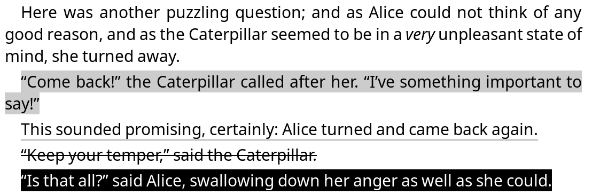
你可以同時使用所有這些樣式，就像使用不同顏色的螢光筆一樣。或者你也可以在此選單中透過長按來選定你最喜歡的樣式並將其設為預設：
另外，如果目前裝置配有彩色螢幕，還可用不同顏色劃線：
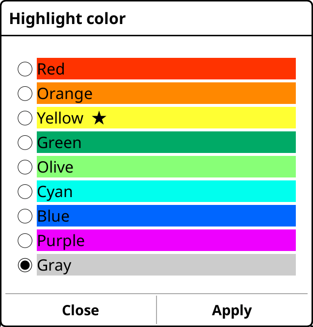
使用多色劃線時的技巧：
- 已經劃下的劃線段落可以改變用色；點選劃線段落，在快顯選單中選擇顏色選項即可。
- 你可以將顏色與底線、刪除線等不同的劃線樣式結合，建立一套強大的劃線系統。例如可以用紅色刪除線樣式標記刪除的段落，或用橙色底線樣式標記重點等等。
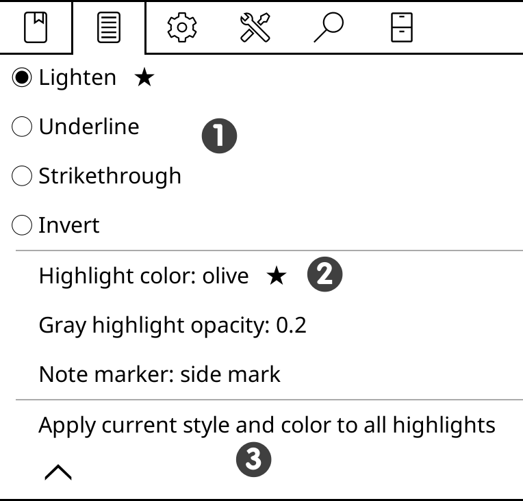
- 在劃線選單中，可以在某種樣式上長按將其設定為預設項（★）
- 選擇一種顏色後，可透過在選單中長按顏色名稱將所選顏色設為預設項（★）
- 將目前樣式及顏色套用於全部劃線選項可以將整本書中所有劃線統一為一種樣式。請務必謹慎，該操作是不可逆的！
筆記：
還可為劃線加入筆記；只需點選一段劃線，從快顯選單中選擇加入筆記。還可選擇一種筆記標記標出包含筆記的劃線。有三種樣式可供選擇 —— 底線、批註線和筆記符號（筆記符號是顯示在下圖右側的鉛筆圖示）：
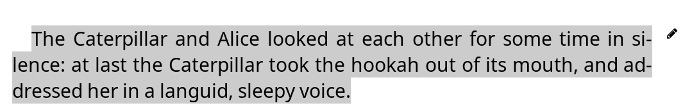
請按下列路徑啟用該功能並選擇一種筆記標記樣式：
KOReader 提供兩種不同的劃線模式：
普通模式與在手機或平板電腦上用手指選擇文字類似，適用於劃線文段在同一頁內的情況。
- 在要劃線文段的首字上長按
- 移動手指到要劃線文段的末尾
- 抬起手指
當劃到頁面邊界時，KOReader 會自動翻頁以保持劃線連貫（僅對 EPUB 和 HTML 文件有效）。該功能可透過下列路徑停用：
選取並劃線模式更適合用來為跨頁的長段落劃線。在此模式下，你不需要用手指在螢幕上拖曳就能完成劃線，因此對於觸控靈敏度不佳，或手部動作較難控制的使用者特別有用。
劃線的方法：
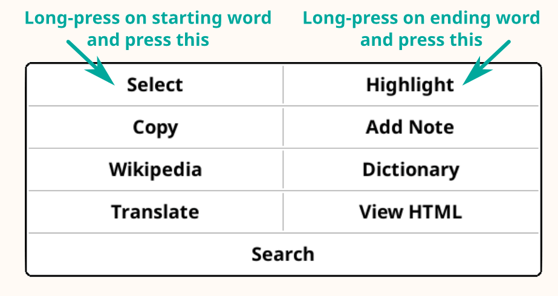
- 在要劃線文段的首字上長按（如果啟用了字典查詢功能則是對首字拖曳）叫出選單。
- 點選選取進入劃線模式後，螢幕左上角會出現一個指示器（點選它可以取得更多資訊）。再次點選劃線起點即可取消劃線。在此模式下，你可以點選或滑動來翻頁，也可以自由瀏覽文件（目錄、快覽等）。
- 在劃線的末字上長按，選單就會再次顯示；若啟用了字典查詢功能，則透過拖曳末字叫出選單。
- 這次改為點選劃線，即可完成這段文段的劃線。
通常情況下該對話方塊會顯示在螢幕中央。如果希望對話方塊顯示在劃線位置附近，可以將選單第二頁的中間選項改為手勢位置：
劃線時，KOReader 會嘗試將選取範圍前後的相關標點符號一併納入。例如，如果你從句子的第一個字劃到最後一個字，KOReader 就會自動把句子兩端的標點符號納入劃線範圍。
但如果從句子中間開始劃線，KOReader 會認為使用者只是想為句子片段劃線，因此不會自動包含句末標點。若要將標點包含在劃線中，請選取完整句子。之後也可長按編輯劃線按鈕補上標點符號。
點選不含筆記的劃線文字，可以看到包含刪除及加入筆記選項的快顯選單。選單底部的按鈕則用於擴充或縮減劃線區域。
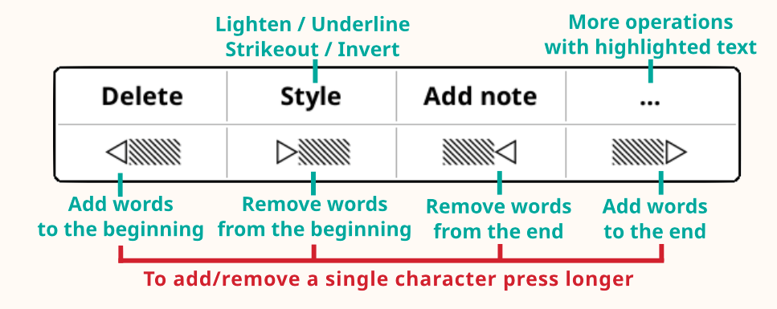
點選附帶筆記的劃線文字，可以看到如下所示的快顯選單。點選編輯劃線開啟上圖所示選單，即可編輯劃線及其附帶的筆記：
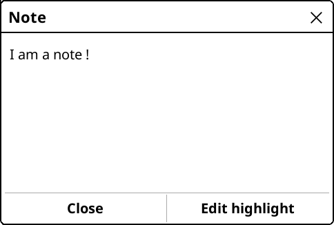
在書籤管理介面，點選選單按鈕（）可以篩選顯示出某一類型的書籤；也可按照劃線樣式篩選：
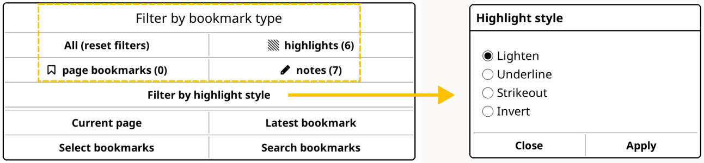
除了加入筆記，KOReader 也允許你直接編輯顯示在書籤清單中的劃線文字。在某些情況下，這可能比為劃線加入筆記更實用。舉例來說，假設你正在校對一段文字，想為一個包含多個日期的句子劃線，而其中一個日期有誤。若要用筆記指出這個錯誤，就得在筆記中說明是哪一個日期有問題。但如果能直接編輯劃線文字，你就可以在有問題的日期旁邊直接寫上「該日期需要再次核對」。
請注意，這項編輯不會改變書籍內容或頁面上顯示的劃線文段，閱讀時看到的仍是原本的句子。編輯後的內容會顯示在書籤清單中；日後匯出劃線時，匯出的也會是編輯過的文字。
要編輯被劃線的文字，請按如下步驟操作：
- 點選劃線文段
- 在快顯選單中點選詳情
- 在詳情對話方塊中點選編輯文字
你也可以從書籤視窗進行這項編輯：
- 透過點選選單或手勢開啟書籤清單
- 長按想要編輯的被劃線文段
- 在選單中點選編輯文字
- 在彈出對話方塊中修改文字，然後點選儲存按鈕
若要將編輯過的文字還原為原本的劃線內容，請依照上述步驟操作，但在第 3 步時不要點選編輯文字，而是點選還原原始文字按鈕。
通常情況下，書籤清單中僅會列出你對文段的劃線。如果劃線附帶筆記，只會在書籤清單中顯示一個鉛筆圖示。可以長按清單中的某一項劃線以檢視（並編輯）附帶的筆記。若要在書籤清單中同時展示筆記，可按照下列路徑設定：
你可以選擇顯示以下內容：
- 僅顯示劃線文字（預設）
- 同時顯示劃線文字及筆記
- 存在筆記時僅顯示筆記，否則顯示劃線文字
在讀完一本書後，可以將它移到指定資料夾以便封存或後續處理。請啟用移動到封存外掛，並在外掛設定中指定封存目錄（設定封存資料夾）。完成設定後，可透過下列方式將書籍移入封存：
- 移動到封存外掛選單
- 透過手勢，或是
- 使用快速選單中的項目
KOReader 提供多種匯出劃線和筆記的方式：
這款多功能外掛可以將劃線匯出為本機檔案，或上傳到線上服務。
本機匯出
劃線可被匯出為以下幾種檔案格式：
- 純文字（.txt）
- HTML 網頁（.html）
- Markdown 檔案（.md）
- Kindle 筆記與摘錄（.txt）
- JSON 檔案（.json）
可以在下列選單中選擇想要使用的匯出格式：
可以在下列選單中檢視（或修改）匯出檔案存放目錄：
線上服務
還可透過網路將劃線匯出到下列服務平臺：
- Joplin - 一款筆記應用程式
- Readwise - 一款線上書籤及劃線軟體
- Memos - 一款可自行架設的開源備忘錄
- Flomo - 一款線上筆記服務
- XMNote - 一款 Android 平臺的中文介面書籤管理軟體
這些服務的詳細設定說明，可以在相關的Wiki 頁面上找到。
在選擇匯出格式後，可以在該外掛選單中匯出目前書籍或書庫中所有書籍的筆記。
若想僅匯出部分書籍的筆記，可以在檔案瀏覽器中這樣操作：
- 在檔案瀏覽器中同時選取多本書籍
- 點選右上角的選單按鈕（顯示為核取記號）
- 從選單中選擇匯出劃線
KoHighlights 是安裝在電腦上的外部程式。將閱讀裝置連線到電腦後，它就能讀取你的劃線和筆記。請前往GitHub 專案頁面取得下載連結與使用說明。
Calibre 是安裝在電腦上的外部程式。透過它的 KOReader 同步外掛，你可以將劃線匯入 Calibre 資料庫。此外掛可以在 Calibre 應用程式中安裝。請前往專案頁面取得下載連結及使用說明。
KOReader 提供多種方式，讓你在螢幕較小的裝置上閱讀為較大頁面尺寸（通常為 A4 或美國信紙尺寸）設計的 PDF／DJVU 文件：
1. 啟用頁面重排
重排功能會嘗試從你的文件中提取文字部分（如果可用），並將其格式化為單欄顯示。效果通常令人滿意。你也可以透過長按它將其設定為預設值。
2. 啟用頁面放大
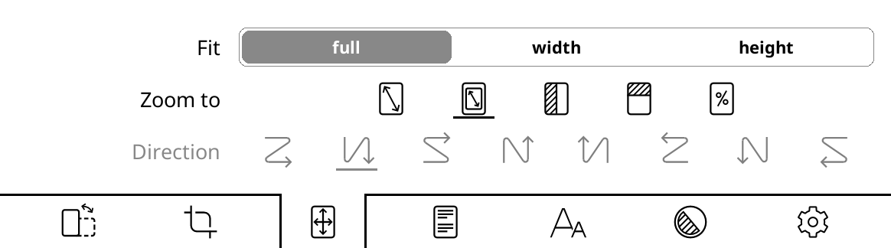
使用此選項，KOReader 會嘗試裁切文件的頁邊距，讓文字在螢幕上看起來更大。你也可以在同一選單中將適配設為寬度，這樣 KOReader 只會配合頁面寬度而非整頁，文字看起來就會更大。
3. 將閱讀裝置設定為橫向模式
這將使你的螢幕更寬，以便你的文件看起來足夠大，可以舒適地閱讀。
4、以 100% 實際尺寸顯示，改為捲動螢幕來閱讀頁面的不同部分
這對閱讀漫畫書尤其有幫助。請先透過該選單項目啟用分欄模式：
然後從同一選單中為文件選擇適當的流向：
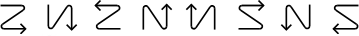
- 例如，如果你正在閱讀一篇雙欄排版的文章，你會向下捲動，先讀完左側欄至本頁末尾，然後移至右上方繼續閱讀右側欄：
- 或者，如果你正在閱讀漫畫書，你會希望以「之」字形的方式移動 右/下左/右：
- 對於日本漫畫書（畫格順序為從右到左），順序可能正好相反：
在此模式下，你還可以從同一選單調整水平/垂直重疊和分欄數，以更好地適應螢幕上的文字。請隨意嘗試這些設定。
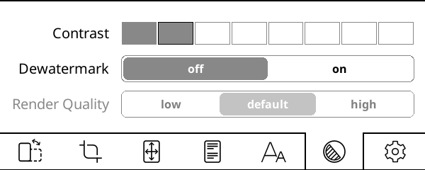
對比設定調整文件中的黑色級別。請注意，相同的對比值適用於文件中的文字和圖片。如果你把它設定得很高，你的圖片可能會變得太暗。
去除浮水印從呈現的文件中移除浮水印。它也可以用來刪除灰色背景。此功能可以將灰階或彩色文件轉換為黑白，提高對比，以便於閱讀。
繪製品質（僅在重排模式下生效）設定文字與圖片擷取處理及輸出的品質。高品質的效果較好，但視文件而定，可能比預設慢很多（翻頁要等好幾秒）。如果你的 PDF/DJVU 檔案開啟得很慢，這是第一個該檢查的設定。
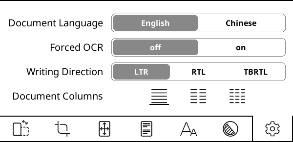
文件語言設定 OCR 引擎將使用的語言。
強制 OCR 顧名思義，即使文件具有文字層，也強制使用 OCR。
書寫方向（僅在重排模式下有效）設定原始文件的方向。對於阿拉伯語和希伯來語等語言，將其設定為從右到左（RTL）。
文件分欄僅在重排模式下有效用於設定原始文件的文字分欄數。
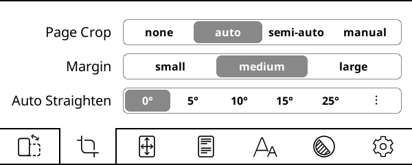
自動拉直功能可將有問題文件的頁面轉正，例如傾斜掃描的 PDF 頁面。此功能適用於 PDF、DJVU、CBZ/CBT 文件與圖片檔案。啟用時請選擇 KOReader 要嘗試校正的最大傾斜角度；如果沒有修正，你可能會需要選擇更大的角度。請注意，視多項因素而定，此功能可能會讓你的閱讀器變慢。
若要儲存劃線，可以使用前面章節介紹過的匯出劃線功能。
如果你是在 PDF 文件上劃線，KOReader 也可以將劃線直接儲存到 PDF 檔案中，這在某些情況下相當實用。這麼一來，劃線會成為 PDF 檔案的一部分，因此可以在其他軟體或未安裝 KOReader 的系統中檢視。例如，當你把含有劃線的 PDF 檔案傳給他人時，對方不必安裝 KOReader 就能看到你的劃線，只要用相容的 PDF 閱讀軟體開啟即可。
警告 若閱讀進度同步外掛被啟用，儲存 PDF 劃線將會修改檔案，進而導致進度同步失敗。若希望同時使用這兩種功能，請將閱讀進度同步外掛設定中的文件匹配方式選項從預設的二進位值改為檔案名稱：
哪些 PDF 閱讀軟體可以顯示這些劃線？
PDF 軟體通常仰賴某些標準程式庫來繪製文件。常見的兩種程式庫是 MuPDF 和 Poppler。KOReader 使用的是 MuPDF 程式庫，因此由 KOReader 寫入 PDF 檔案的劃線，目前無法在使用 Poppler 程式庫的閱讀軟體中檢視。下方是相容性測試清單：✅代表該軟體可以檢視 KOReader 劃線；❌代表該軟體不支援檢視。⚠️代表該軟體需要安裝額外的外掛才可檢視。表中項目按字母順序排列。
警告 這份清單並不完整，也可能不是最新的，因此建議你自行測試相容性。做法很簡單：在 KOReader 中做一處劃線，將它寫入 PDF 檔案，然後用你想使用的閱讀軟體開啟該檔案，檢查劃線是否可見。
- ✅ Chrome 瀏覽器（所有平臺）
- ✅ Deepin 閱讀器（Linux）
- ✅ Firefox 瀏覽器（所有平臺）
- ✅ Ghostscript（所有平臺）
- ✅ MuPDF（Windows/Android）
- ⚠️ Zathura（如果啟用了 MuPDF 外掛）
- ❌ Adobe Acrobat Reader
- ❌ Evince（Linux）
- ❌ 福昕閱讀器
- ❌ LibreOffice Draw（作為編輯器）
- ❌ Moon Reader（Android）
- ❌ Okular（Linux）
- ❌ SumatraPDF（Windows）
- ❌ Xpdf（Linux）
- ❌ Xreader（Linux）
要讓劃線相容其他閱讀場景會相當費工夫；如果打算使用這項功能，最好先詳細瞭解它的運作方式，以免遇到令人困擾的情況。
簡單總結：若希望 PDF 文件中的劃線日後還能刪除或匯出，在備份或複製文件到其他裝置時，必須連同文件關聯的 .sdr 資料夾一起複製。少了這個資料夾，KOReader 雖然仍能顯示已儲存的劃線，但無法得知它們在檔案中的位置，因此無法修改。請繼續閱讀後續內容以進一步瞭解。
KOReader 中普通劃線的工作原理
當你在 KOReader 中為文段劃線時，不論文件是 EPUB 還是 PDF，這段劃線都會寫入一個設定檔。例如在閱讀 Alice in Wonderland.epub 時，書籍檔案所在目錄中會建立一個名為 Alice in Wonderland.sdr 的資料夾。劃線資料會存放在這個 .sdr 資料夾中的檔案裡。也就是說，如果刪除了這個與書籍關聯的 .sdr 資料夾，你就會失去這些劃線。
KOReader 中 PDF 文件劃線的工作原理
PDF 文件的劃線功能與上述說明有所不同。如前所述，儲存 PDF 劃線時，劃線資料會被直接寫入到 PDF 檔案中，成為檔案的一部分。這就是為什麼把這份 PDF 傳送給其他使用者後，對方能使用相容的 PDF 閱讀軟體檢視劃線。對方不需要記錄劃線的 .sdr 資料夾，因為劃線已經直接嵌入 PDF 檔案中。
讓我們透過一個例子來解釋使用此功能時可能出現的問題。想像一下，你正在使用 KOReader 在電子閱讀器上閱讀 PDF 書籍：
- 若將劃線儲存到 PDF 檔案選項開啟，KOReader 會在做下劃線的同時將劃線寫入 PDF 檔案。
- 你想繼續用 KOReader 在你的手機上閱讀這本書，所以你把這個 PDF 檔案從你的電子閱讀器複製到你的手機上（但是你沒有複製 .sdr 資料夾，只有 PDF 檔案）。
- 當用手機上的 KOReader 開啟書籍，可以看到劃線仍保留在書籍中。
此時兩處裝置上的情況是一致的，電子書閱讀器和手機上的 KOReader 都能檢視 PDF 文件中的劃線。但兩者僅是看起來一樣，實際卻有很大不同。
電子書閱讀器上的 KOReader 知道此 PDF 文件中的哪些劃線是由 KOReader 新增的，因為它有關聯的 .sdr 資料夾。但手機上的 KOReader 則不知道這些資訊，它只能讀取 PDF 文件。
當你嘗試刪除或匯出 PDF 劃線時，差異就會出現。電子書閱讀器上的 KOReader 既可以刪除也可以匯出這些劃線，但手機上的 KOReader 則不行。如前所述，它沒有文件關聯的 .sdr 資料夾，因此無法分辨哪些是劃線，只能將劃線視為原文的一部分。
所以簡單來說，如果希望日後還能刪除或匯出 PDF 劃線，在備份或複製 PDF 檔案到其他裝置時，務必將關聯的 .sdr 資料夾一起複製。
OCR（光學字元辨識）是從圖片中提取文字的過程。在 KOReader 中，它通常用於從 PDF 檔案中的掃描書頁中提取文字。KOReader 仰賴 Tesseract 開源 OCR 引擎來執行此任務。
要使用此功能，你需要：
- 將 Tesseract 語言資料安裝到你的 KOReader
- 將新安裝的語言新增到 koreader/defaults.lua 設定檔（僅當你的語言不是英語或中文時才需要）
漫畫書一般需要比純文字內容更頻繁的頁面重新整理。對於普通文字，你可以毫無問題地將頁面重新整理間隔設定為一個很高的數字。但圖片可能會留下更多殘留並導致重影，這與你的電子閱讀器的螢幕密切相關。
KOReader 允許你將手勢指派給不同的重新整理頻率。例如，你可以在閱讀漫畫時將左緣向上滑動設定為每頁重新整理，並將左緣向下滑動設定為每 x 頁重新整理，用於純文字書籍。因此，當你開啟漫畫時，只要簡單點選或滑動（反之亦然），就能切換到更頻繁的重新整理。
此操作位於：
這項功能讓你在較小的螢幕上更容易閱讀漫畫書。閱讀 PDF、DJVU、CBZ 或 CBT 文件時，可以透過下列路徑啟用：
啟用此選項後，KOReader 會嘗試在螢幕上找出矩形分格的邊界。如果你長按某個分格，KOReader 就會放大並只顯示該分格。
正如你所猜到的，此功能最適合分格邊界乾淨俐落的漫畫。此外，由於這個邊界的問題，在此模式下無法翻頁跳到下一個分格。你必須關閉放大後的分格，再長按下一個分格。做法很簡單，只要在放大後的分格上向下滑動即可。此外，你也可以使用任何多方向滑動手勢（上、下、左、右的任意組合）來離開這個檢視。
操作過程如下圖所示：
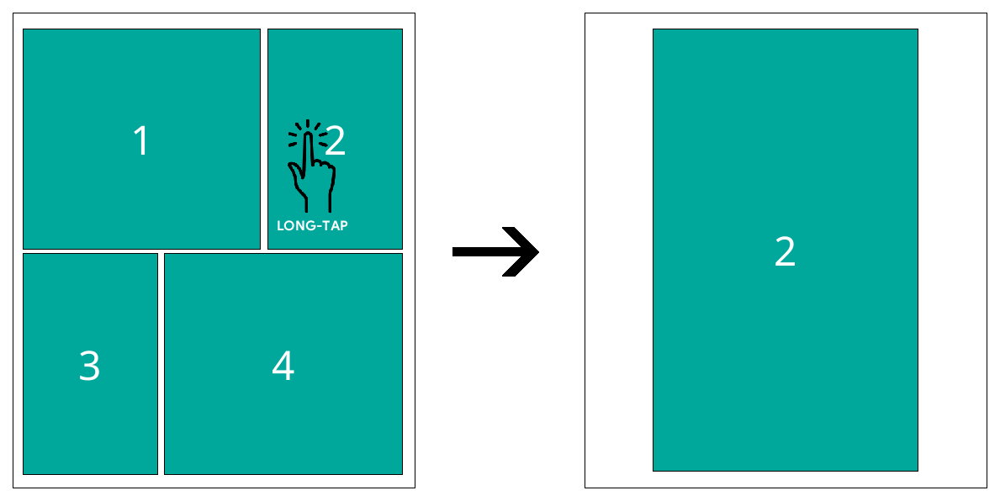
如果要將此功能用於 EPUB、FB2、HTML 或圖片檔案等其他檔案類型，就必須使用不同的引擎開啟檔案：在檔案瀏覽器中長按檔案名稱，點選開啟方式，並選擇 MuPDF。
當你讀到書籍的最後一頁時，KOReader 會顯示一個對話方塊，其中的開啟下一本書籍動作會開啟與目前書籍同一目錄中的下一個檔案。因此，你可以把整套書放在同一個資料夾，一本接一本連續閱讀，不必回到檔案瀏覽器。
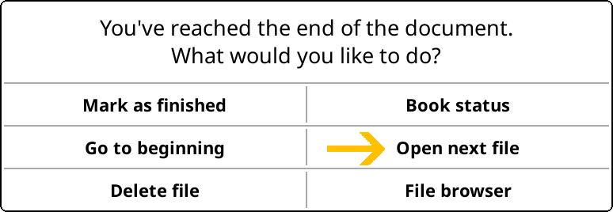
開啟下一個檔案時，KOReader 會跳過標記為已讀完的檔案。舉例來說，當你的資料夾中有一批漫畫檔案，而你已經讀過其中幾本時，這個功能就很有用。你可以從上方顯示的書籍結束對話方塊中將檔案標記為已讀完，也可以在檔案瀏覽器中長按該檔案來標記。將它們複製到你的裝置後，你可以：
- 在 KOReader 中開啟檔案瀏覽器
- 長按你已經讀完的書，然後點選標記為已讀完
現在，你只需在書本末尾點選開啟下一個檔案，就能一本接一本讀完所有檔案。KOReader 會跳過你已經讀過的那些。
對喜歡在電子紙裝置上閱讀漫畫的使用者，下面有一些提升閱讀體驗的小技巧。若漫畫在裝置上的呈現方式不盡如人意，預先處理漫畫書檔案是最佳解決方案。
MOBI 和 EPUB 等檔案類型並不適合用來處理以圖片為主的內容（例如漫畫）。KOReader 對 MOBI 的支援非常有限，甚至可以說不存在；而 EPUB 以文字繪製為優先的設計，在顯示整頁圖片時可能會出現問題。更多技術細節請參閱這則GitHub 議題。
最好的選擇是建立一份在 KOReader 中效果更好的 CBZ 格式檔案。.cbz 副檔名的檔案本質上是將未壓縮處理的圖片集封裝而成的 ZIP 壓縮檔，內含通常為 .png 或 .jpeg 格式、按照漫畫頁碼排序的多個圖片檔案。KOReader 也支援開啟 CBT 格式檔案，它與 CBZ 相似，區別是使用 TAR 格式封裝。
將漫畫轉換為 CBZ 最簡單的方法，是先從各個網站取得漫畫圖片，再用 Kindle Comic Converter（https://github.com/ciromattia/kcc）轉換。其中有幾項實用的設定，例如自動將跨頁分割旋轉為橫向，以及套用抖動，讓電子紙顯示的漸層能平滑抖動，不會出現鋸齒狀的色階。
將圖片大小調整為電子閱讀器的螢幕尺寸，就能獲得最佳效果。針對裝置精確螢幕尺寸製作的 CBZ，可避免閱讀時重新縮放。KOReader 在閱讀時確實會將圖片縮小到螢幕尺寸，但不建議這樣做，因為 KOReader 在縮放前會先加入一道抖動處理，這會造成畫質損失。
但是，如果你想在多臺裝置上使用自己製作的 CBZ，或想保留高解析度以備日後使用，最好的選擇可能是為解析度最高的裝置製作 CBZ。或者乾脆選一個「高」解析度，最好與來源解析度相同，例如 300 PPI 以上（最高可達 450 甚至 600），當然前提是來源沒有更低。假設螢幕尺寸為 8 英吋，那麼 1500×2000 會是不錯的目標解析度。如果圖片更大，你應該在裝置上實際測試看看能否順利處理。例如記憶體較少的舊款 Kindle，可能就難以處理 3000×4000 這類尺寸。如果你要自動化這個流程，也許值得考慮同時製作低畫質與高畫質兩個版本（例如 200/400 或 300/600 DPI）。
以下是處理單一漫畫檔案的範例流程：
- 下載 Kindle 漫畫轉換器（KCC）（連結https://github.com/ciromattia/kcc）
- 從你選擇的來源下載你的漫畫（如：HakuNeko）
- 解壓縮漫畫檔案。現在，你應該有一個僅包含圖片的目錄（或包含圖片的子目錄，沒有壓縮檔）
- 使用 KCC 處理這個目錄。每個目錄會產生一個 CBZ 檔案，因此如果想一次製作多卷漫畫，可以同時選取多個目錄
KCC 的一些有用設定：
跨頁分割器：此功能可檢測雙頁，並允許你將其旋轉或切成兩半。
放大：放大比目標解析度小的圖片。
如果你想更沉浸地欣賞漫畫，在建立 CBZ 檔案時，請務必在 KCC 中選擇與裝置螢幕解析度完全相同的解析度。此外，你也可以在 KOReader 閱讀漫畫時隱藏底部進度列。如此一來，就能不受干擾地以沉浸式全螢幕檢視欣賞漫畫。
!!! 進階
使用 KCC 建立 CBZ 檔案後，你還可以對圖片套用額外的抖動處理。這樣一來，電子紙顯示的漸層就能平滑抖動，不會出現鋸齒狀的色階。這個步驟能讓漫畫經過細部調整，在 KOReader 中看起來更好。
你可以使用 ImageMagick 來處理圖片。ImageMagick 是一套功能強大的開源軟體套件，可用來顯示、建立、轉換、修改與編輯點陣圖。你可以下載 ImageMagick，並從命令列一次處理多張圖片。
- 將之前使用 KCC 建立的 CBZ 檔案解壓縮，
- 下載以下檔案dither_pack.zip（位於 Yandex Disk 上），其中包含兩個批次處理檔案（.bat）和一個 GIF 顏色模板。
- 將這三個檔案放到你要處理的圖片旁邊
- 編輯 _magick_manga_ditherN_resize.bat，並將解析度更改為你的裝置解析度（在 bat 檔案的兩個位置）。
警告 下一個步驟會把目錄中的所有圖片取代為處理後的版本。因此若想保留原始圖片，請先在其他目錄另外複製一份。
- 執行 _magick_manga_ditherN_resize.bat 來調整圖片大小並套用抖動。
- 假設你安裝了 7-Zip，執行 _batch_archive.bat 將所有處理過的圖片封裝到 CBZ 檔案中。
!!! 進階
你可以讓 KOReader 從左向右翻頁，這樣滑動和點選區域就會互換。要啟用此功能，請加入下列幾行：
["/storage/emulated/0/Books/manga"] = {
["inverse_reading_order"] = true,
["kopt_zoom_direction"] = 0,
},
到此檔案：
/koreader/settings/directory_defaults.lua其中 /storage/emulated/0/Books/manga 是存放漫畫的目錄的絕對路徑。更改之後，當你從上述目錄開啟檔案時，滑動和點選區域就會互換。
當你第一次執行 KOReader 時，你會看到檔案瀏覽器介面。它是 KOReader 的兩個主要介面之一，所有的檔案與資料夾操作都在這裡進行。你可以透過下列方式從閱讀畫面開啟它：
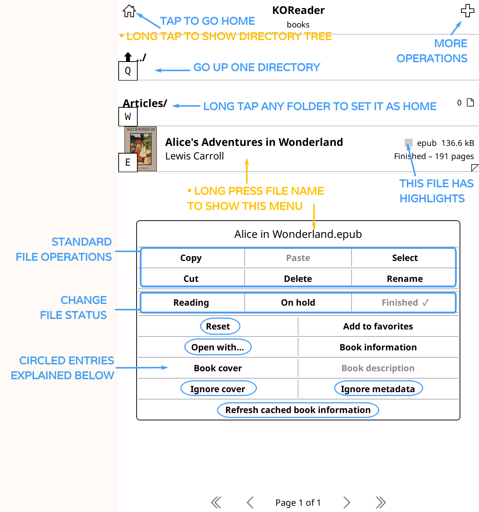
預設情況下，檔案瀏覽器顯示你的首頁資料夾，也就是你的書庫主資料夾。你可以長按任一資料夾來變更這個設定。你也可以從螢幕頂端向下滑動開啟頂部選單，變更檔案瀏覽器的許多選項，例如書籍的顯示或排序方式。
圖片中帶圓圈的項目說明如下：
重設：該選項可以重設書籍的部分資料，如閱讀進度、書籤、自訂封面等，你可以在接著彈出的對話方塊中選擇要重設的項目。
警告 使用重設對話方塊時請務必謹慎，並仔細確認哪些項目已被勾選，否則可能會意外重設這本書的所有相關資料。
開啟方式：KOReader 有不同的引擎來繪製不同的檔案類型。在某些情況下，你可以在不同的引擎中開啟檔案以獲得其他一些功能。請參閱下面的檢視封存檔案和檢視圖片檔案部分。
忽略封面：如果由於某種原因你想停用這本書的封面（它可能有錯誤的封面或封面在電子紙螢幕上顯示得不清楚），你可以選擇這個。
忽略詮釋資料：如果你的書籍詮釋資料不正確，名稱欄位可能會顯示無用的資訊。選擇此選項可顯示檔案名稱，而不是詮釋資料。
重新整理快取的書籍資訊：當你把書籍加入書庫時，KOReader 會快取該書的詮釋資料與封面。如果你在把書籍複製到裝置之後做過一些修改，這些資訊可能就需要更新。如果你看到錯誤的封面或詮釋資料，就可以用這個選單項目來重新整理書籍資訊。
檔案瀏覽器可讓你同時對多個檔案執行複製、移動、刪除、匯出劃線等操作。為此，你必須先選取檔案。目前在檔案瀏覽器中有三種選取檔案以進行批次操作的方式：
- 第一種方式：在檔案名稱上長按，從彈出的對話方塊中選擇多選。此時將進入連續選擇模式。接著點選其他檔案，即可將它們加入選取。選完檔案後，點選螢幕右上角的勾號圖示。你可以在對話方塊中選擇要對這些檔案執行的操作，或從同一個對話方塊退出連續選擇模式。
- 第二種方式：點選螢幕右上角的加號圖示（＋），從彈出的對話方塊中選擇選取多個檔案。此時將進入連續選擇模式，接下來的操作與第一種方式相同。
- 第三種方式：透過檔案搜尋功能來挑選檔案。如果你需要對分散在不同資料夾中的多個檔案執行操作，這種方式就很好用。例如，你想把書庫中所有托爾金的作品移到一個新資料夾，請依照下列步驟操作：
- 從頂部選單按搜尋分頁（帶有放大鏡圖示）並選擇檔案搜尋。
- 如果你也想在資料夾中搜尋，請勾選包含子資料夾選項。如果你想讓 KOReader 一併搜尋書籍的詮釋資料，可以勾選搜尋書籍詮釋資料。否則，KOReader 只會在檔案名稱中尋找你輸入的字詞。
- 你可以按對應的按鈕，從書庫的主資料夾或目前資料夾開始搜尋。
- 搜尋完成後，畫面上會列出符合條件的檔案清單（當然，前提是有找到符合的結果）。接著點選螢幕左上角的漢堡選單，即可進入連續選擇模式。
- 點選所有要處理的檔案，然後點選螢幕左上角的勾號圖示（√）。畫面上會出現一個對話方塊，其中包含在檔案瀏覽器中選取，請選擇這個選項。
- 現在你會回到檔案瀏覽器，而你在搜尋對話方塊中選取的檔案，在這裡也會是已選取的狀態。
- 點選螢幕右上角的勾號圖示（√）。現在你可以從對話方塊中選擇要對這些檔案執行的操作。
KOReader 允許你將常用的資料夾加入資料夾捷徑選單，方便快速開啟。例如，如果你的書庫中有一個 Archive 資料夾，位於 Home>Articles>Scientific>Archived 下，你可以為這個 Archived 資料夾指定一個資料夾捷徑，即使在閱讀書籍時也能快速開啟。
新增資料夾捷徑：
有兩種方法可以將資料夾新增到資料夾捷徑清單中：
- 當你在檔案瀏覽器中時，點選右上角的+（加號）選單按鈕，然後點選新增至資料夾捷徑項目，並為此捷徑輸入描述性名稱。這將新增你目前所在的資料夾
- 在檔案瀏覽器中，長按資料夾名稱可開啟快顯選單。點選新增至資料夾捷徑項目，然後為此捷徑輸入一個描述性名稱。這將新增你按下的資料夾
資料夾捷徑清單中的資料夾將在檔案瀏覽器中有一個星號（★）。
你可以以相同的方式從捷徑中移除資料夾，方法是長按資料夾並選擇從資料夾捷徑中移除。
檢視資料夾捷徑：
你可以在閱讀書籍時從檔案瀏覽器或閱讀螢幕開啟資料夾捷徑。
- 從檔案瀏覽器：點選右上角的+（加號）選單，然後選擇資料夾捷徑或指定手勢。
- 從閱讀螢幕：透過為它指定手勢。
它位於手勢管理員的檔案瀏覽器部分。你可以在本指南的相關章節瞭解如何設定手勢。
如果你有 .txt 格式的書籍（在中文和西里爾文語言中更常見），你可以嘗試啟用自動偵測 txt 檔案版式功能。在某些情況下，它可以改善繪製效果，使文字更「像書」。啟用後，繪製引擎將使用啟發式方法（文字以某種最大行寬換行、標記段落的單行或雙空行，縮排或被視為標題的置中文字…）來判斷如何更好地繪製文字，並嘗試建立一個目錄。
你可以在此處啟用此功能（僅當你正在讀取 .txt 檔案時才可見）：
請注意，此功能可能會弄亂 ASCII 藝術繪圖和基於空格字元的格式。如果你的書籍具有這些功能，最好使用預設模式，在該模式下，文字檔案以等寬字型按原樣呈現。
KOReader 可以讀取儲存/壓縮在 ZIP 壓縮檔中的檔案。你可以使用封存檢視器開啟 ZIP、CBZ 和 EPUB（因為它們也是 ZIP 壓縮檔）檔案以檢視包含的檔案：
- 在檔案瀏覽器長按檔案名稱
- 點選開啟方式…
- 點選封存檢視器
ZIP 壓縮檔案可以包含多種類型的文件，如 HTML、TXT 或圖片。只有當你提示 ZIP 壓縮檔中的檔案類型時，KOReader 才能正確開啟你的 ZIP 壓縮檔。如果你只給檔案一個 . zip 副檔名，KOReader 將假定該壓縮檔僅包含圖片，並嘗試像 CBZ 檔案一樣開啟它。
預設情況：你的檔案名稱.zip，假定為圖片的 ZIP 壓縮檔（並由 MuPDF 引擎開啟）
如果你的 zip 壓縮檔包含其中一種類型（而不只是圖片），請依照對應的方式命名：
- FB2 格式（FictionBook） - 你的檔案名稱.fb2.zip
- HTML - 你的檔案名稱.htm.zip / 你的檔案名稱.html.zip
- 文字記錄檔 - 你的檔案名稱.log.zip
- Markdown 檔案 - 你的檔案名稱.md.zip
- 富文字格式 - 你的檔案名稱.rtf.zip
- 純文字 - 你的檔案名稱.txt.zip
如果檔案沒有這樣命名，可能就會用到錯誤的閱讀器／格式引擎，你將看到此檔案沒有閱讀器引擎或檔案無效訊息。你可以按照上述說明重新命名此檔案，也可以長按檔案名稱，然後選擇開啟方式…，再選擇正確的引擎。
你可以用圖片檢視器開啟圖片檔案，而不是把它當成書籍開啟。像這樣開啟的檔案不會出現在你的歷史記錄中，而且縮放與旋轉的支援更好。
- 在檔案瀏覽器長按檔案名稱
- 點選開啟方式…
- 點選圖片檢視器
KOReader 提供了兩種讀取 Markdown 文件的選項。
- 你可以直接點選它，把文件當成書籍一樣開啟。此模式不提供格式設定，所以你的 .md 檔案看起來就像在文字編輯器中開啟一樣。
- 你可以將 Markdown 文件轉換為 HTML。此操作會從 Markdown 文件產生格式正確的 HTML 檔案，並根據標題建立目錄。
要轉換 .md 檔案，請在檔案瀏覽器中長按該檔案，然後從快顯選單中點選轉換按鈕。系統會在同一個目錄中建立一個同名但副檔名為 HTML 的新檔案。請注意，轉換可能需要一段時間，實際時間取決於你的 Markdown 檔案與裝置速度。
你還可以為 KOReader 無法自動辨識的檔案類型設定檔案關聯。要將檔案與 KOReader 的其中一個提供者建立關聯，請先在檔案瀏覽器中長按你的檔案，然後選擇一個提供者引擎來處理此檔案。你可以勾選：
- 始終對此檔案使用此引擎：僅將此提供者與此特定檔案相關聯
- 或者勾選始終對檔案類型使用此引擎，將此提供者與所有副檔名相同的檔案相關聯
- 在同一個對話方塊中，你可以點選檢視預設檔案類型來檢視所建立的關聯
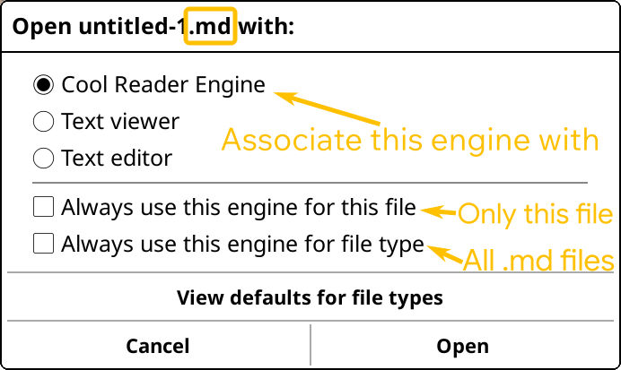
KOReader 的收藏清單功能可以讓個人書庫的管理更加高效。簡單來說，收藏清單就是由使用者建立的書籍清單。例如可以建立標題分別為文學和非文學的收藏清單，將對應的書籍編入其中。當然按資料夾存放書籍也可實現類似目的，但收藏清單用起來更加靈活。
使用收藏清單整理書籍相比資料夾的一些優勢：
- 將書籍編入收藏清單並不會移動書籍檔案位置，因此存放在不同資料夾中的多本書籍可以被編入同一份收藏清單。
- 同一本書可以被編入多份收藏清單，這很難透過資料夾實現。例如，一本書可以同時被編入科幻題材收藏清單和戰爭文學收藏清單。
- 設定檔可套用於收藏清單。如果對 KOReader 的設定檔功能不熟悉，請查閱下文說明。（當然，設定檔也可套用於資料夾，但收藏清單無需移動書籍檔案即可臨時套用設定檔。）
使用者可建立多份收藏清單來對應各種書籍分類方式，例如：
- 作品體裁：虛構文學、非虛構文學、回憶錄等。
- 閱讀狀態：正在閱讀、想讀、接下來要讀、未讀完等。
- 叢書系列：《指環王》、《哈利波特》等。
- 文件類型：書籍、科研論文、網頁文章等。
若要建立收藏清單，請按照下列路徑找到收藏清單對話方塊：
該對話方塊可在閱讀畫面或檔案瀏覽器中使用。開啟時選單會列出現有收藏清單。預設情況下將顯示一份標題為最愛的收藏清單，其中包含已被新增到最愛清單的書籍。
- 建立新收藏清單：點選螢幕左上角的漢堡狀選單鍵 ⇨ 點選建立新收藏清單
- 刪除收藏清單：在收藏清單標題上長按 ⇨ 點選刪除該收藏清單
- 修改收藏清單標題：在收藏清單標題上長按 ⇨ 點選修改收藏清單標題
- 更改收藏清單順序：點選螢幕左上角的漢堡狀選單鍵 ⇨ 點選收藏清單排序
有三種方式可以將書籍新增到收藏清單中：
一、透過檔案瀏覽器及歷史記錄畫面
可以在檔案瀏覽器或歷史記錄畫面中將書籍新增到收藏清單。在歷史記錄畫面中，書籍只能逐本新增。在書籍上長按，選擇收藏清單…，然後可以選擇將該書新增到一份或多份收藏清單中。
若要一次性新增多本書籍，請在檔案瀏覽器中按照下列方式操作：
- 長按某本書
- 在快顯選單中點選多選
- 選取其他書籍
- 點選右上角的勾號（✔️）圖示
- 點選收藏清單
要新增單本書籍，只需在檔案瀏覽器中長按該書，在快顯選單中選擇新增到收藏清單。
二、透過收藏清單管理選單
該方法可以將一本或數本書籍新增到收藏清單中。與在檔案瀏覽器中操作不同，這種方法可以將整個資料夾及下層資料夾內的全部書籍一次性新增到收藏清單。如果書籍文件已經按照資料夾分類，該方法將十分高效。例如，如果全部科幻類書籍都在同一個資料夾內，可以建立標題為科幻題材的收藏清單，然後將該資料夾新增進去。
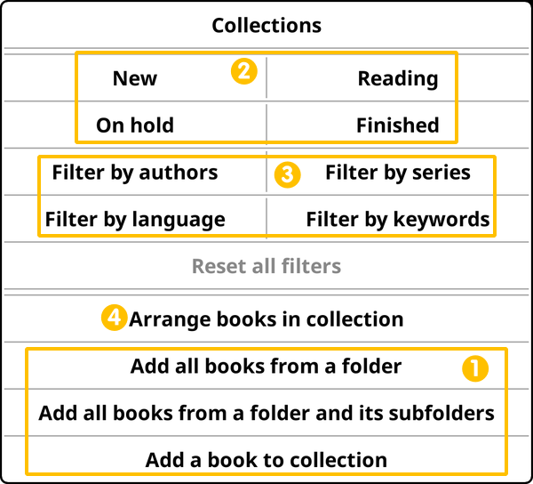
如上圖所示，方框 1 標出了新增書籍選項。你可以從收藏清單畫面的漢堡選單開啟這個選單：
- 將整個資料夾加入收藏清單：如選項標題所示，該選項可以將所選資料夾中的全部書籍一次性編入目前收藏清單。請注意，所選資料夾的子資料夾中的書籍不會被新增。例如，使用者選取名為虛構作品的資料夾，其中包含名為科幻作品和戰爭文學的兩個子資料夾，這兩個子資料夾內的書籍就不會被新增到目前收藏清單中。
- 將所選資料夾及子資料夾中的書籍新增到收藏清單：該選項會將所選資料夾的子資料夾一同加入收藏清單，使用時應當謹慎，因為它會一路往下把所有書籍都加進來。所以如果你的資料夾巢狀層級很多，新增的書籍數量可能會遠超使用者預期。
- 新增書籍到收藏清單：該選項可以將單本書籍新增到目前收藏清單。
你可以從檔案瀏覽器、歷史記錄畫面或收藏清單畫面，將書籍從收藏清單中移除。在檔案瀏覽器和歷史記錄畫面中，長按書籍並選擇收藏清單，即可看到這本書所屬的收藏清單標題旁有勾選標記。點選該標記取消勾選，就能將書籍從對應的收藏清單中移除。另外，在收藏清單畫面中長按書籍，再選擇從收藏清單中移除也可以。
收藏清單可能十分冗長，因此 KOReader 提供多種篩選方式，方便你更容易找到要讀的書籍。如前圖所示，方框 2 和方框 3 標出了書籍篩選選項。方框 2 可依書籍閱讀狀態（新書、閱讀中、已讀完、暫緩）篩選；方框 3 可透過書籍詮釋資料（作者、叢書系列、語言、關鍵字）篩選。這兩組篩選條件也可以組合使用，例如：「顯示這份收藏清單中 Isaac Asimov（按作者 -> Isaac Azimov）所著、我還沒開始閱讀的新書（按狀態 -> new）。」
你可以在檔案瀏覽器中長按書籍，並從選單中選擇書籍資訊來更新書籍詮釋資料。在彈出的視窗中，長按任一欄位即可修改作者或關鍵字等詮釋資料。這項工作也可以交給第三方應用程式 Calibre，用它管理書籍詮釋資料會容易得多。
在收藏清單中有兩種不同的搜尋操作：在書名及詮釋資料中搜尋關鍵字，或者在書籍內文中搜尋。搜尋對話方塊可透過下列路徑開啟：
在搜尋書籍全文時，有以下幾點需要注意：
- 這種搜尋僅在透過檔案瀏覽器開啟收藏清單時才可用，在閱讀畫面下不可用。
- 這種搜尋可能非常緩慢（收藏清單中的每本書大約耗時 2 秒），如果收藏清單很長，搜尋耗時將會非常久。
搜尋功能會因目前所處的收藏清單視窗層級而不同。當處於瀏覽全部收藏清單的根目錄檢視下，搜尋範圍將包含全部收藏清單。若要在特定收藏清單內搜尋，請點選進入該收藏清單後再執行搜尋操作。如果同時搜尋了書籍內文，這種區別將十分關鍵，因為那是一項頗為耗時的操作。
執行一次搜尋操作後，搜尋結果將自動生成一份新收藏清單。
在建立收藏清單並新增書籍後，使用者可能希望收藏清單可以與資料夾內容保持同步。例如，使用者使用科幻資料夾存放所有科幻作品，並用它建立了一份科幻題材收藏清單。如果希望在向該資料夾中新增檔案後，科幻題材收藏清單可以自動更新，可以使用收藏清單的關聯資料夾功能。
該功能可以將一個或多個資料夾關聯到收藏清單，KOReader 將在下列幾種情況下重新掃描這些資料夾，以便將書籍檔案的變化反映到收藏清單中：
- 為收藏清單新增關聯資料夾後
- 向關聯資料夾中新增了次級資料夾
- 檢視該收藏清單時
- KOReader 啟動時
將資料夾關聯到收藏清單的方法：
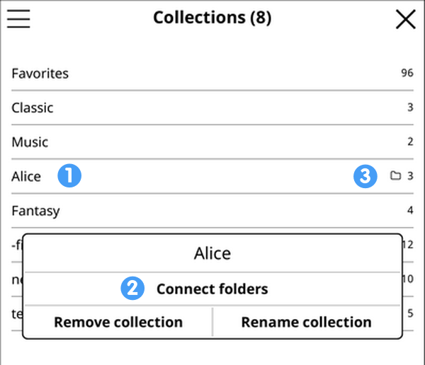
- 前往如上圖所示的收藏清單介面。
- 長按想要關聯到資料夾的收藏清單標題①。
- 在快顯選單中選擇關聯資料夾②。
- 此時會顯示已關聯的資料夾清單。
- 點選螢幕左上角的加號圖示，在彈出的選取資料夾視窗中選取要新增的資料夾。
- 重複最後一步以新增多個資料夾。
如上圖所示，關聯了資料夾的收藏清單標題右側有一個資料夾圖示③。
為了讓同步功能正常運作，最好連同子資料夾也一併新增。在上面的第四步，開啟已關聯的資料夾清單後，長按某個資料夾，再從快顯選單中選擇包含/排除子資料夾。
將收藏清單與資料夾斷開關聯的方法：
- 前往如上圖所示的收藏清單介面。
- 長按想要關聯到資料夾的收藏清單標題①。
- 在快顯選單中選擇關聯資料夾②。
- 此時會顯示已關聯的資料夾清單。
- 長按想要斷開關聯的資料夾，在快顯選單中選擇斷開資料夾關聯。
收藏清單可配合 KOReader 的設定檔功能使用。如果對設定檔功能不瞭解，下面是取自設定檔一節的介紹：
設定檔本質上是一套操作集合（就像巨集命令），可透過單個手勢觸發。
例如在閱讀某種類型的書籍時總會套用如下設定：
- 將螢幕切換到橫向顯示模式
- 增加字型大小並提高對比
- 開啟螢幕前光
透過設定檔外掛，只需執行單次操作即可完成這些調整。
設定檔可以手動套用，但自動套用特性才是該功能的強大之處。該特性可以在指定情況下自動套用特定設定檔，請點選自動套用配置前往對應章節瞭解。此處僅介紹在收藏清單中自動套用配置的功能。
簡單來說，使用者可以建立若干套設定檔，並且在開啟特定收藏清單中的書籍時自動套用。一些範例：
- 將所有漫畫書新增到漫畫作品收藏清單，並建立一個設定檔，在開啟該收藏清單中的書籍時自動套用，將翻頁方向改為從右向左，並交換左右兩側的點選和滑動翻頁操作。
- 可以將漫畫書新增到套用配置的收藏清單，閱讀時將螢幕重新整理間隔縮短為 逐頁重新整理，以避免殘影。
- 可以將有問題的 PDF 文件編成一份收藏清單，在閱讀這些文件時套用設定檔觸發 自動 OCR 或者啟用頁面重排模式。
KOReader 可重新排版 PDF 文件（該選項在閱讀 PDF 等固定版式文件時出現在底部選單中），使其適合在小尺寸螢幕的閱讀裝置上閱讀。但為了更好的閱讀效果，可能需要使用者預先將文件轉換為版式更加靈活的 EPUB 檔案格式。
為便攜行動裝置轉換及優化文件的最常用軟體是 Calibre（主要用於EPUB 和 Kindle）以及 K2pdfopt（主要用於 PDF）。
Calibre 可以將文件轉換為多種格式。它的內建編輯器還可直接編輯 EPUB 和 Kindle 等常見電子書格式，並修正其中的問題。
K2pdfopt 可針對行動閱讀裝置與手機優化 PDF 和 DJVU 檔案。它處理多欄的 PDF/DJVU 檔案效果很好，即使是掃描版 PDF 檔案也能重新編排文字。同時，它也可以當成一套通用的 PDF 複製、裁切、調整大小、OCR 等處理工具。
OCRmyPDF 是一款命令列應用程式，可為掃描版 PDF 檔案（這類檔案只有圖片、沒有文字）加上 OCR 文字層，讓它們可以被搜尋或複製貼上。在閱讀年代較久的掃描書籍時格外有用。它也可以優化圖片，讓檔案更小。
SingleFile 是一款適用於 Mozilla Firefox、Google Chrome 及 Microsoft Edge 的瀏覽器外掛。這款外掛可以將網頁包含的圖片、樣式表和指令碼等封裝儲存為單個 .html 檔案。
!!! 專業操作
KOReader 將與書籍相關的設定和額外資訊儲存在與書籍檔案相同的目錄中。我們稱之為詮釋資料，它包括：
- 書籍的顯示設定
- 全書閱讀進度
- 劃線、書籤與筆記
在最近的一次更改中，我們新增了儲存此詮釋資料的新方法，以解決與裝置之間同步相關的某些問題。目前有三種不同的方法來儲存詮釋資料，每種方法都有自己的優缺點。
你可以從此選單更改此設定：
警告 強烈建議在改動任何設定前先閱讀下面的章節，瞭解各種方法之間的差異與運作方式。否則可能會遺失書籍設定、閱讀進度及註解。
這是 KOReader 新安裝時使用的預設方法。在此方法中，當你將 Alice In Wonderland.epub 複製到裝置並首次開啟時，將在同一目錄中建立一個名為 Alice In Wonderland.sdr 的資料夾。此目錄包含本書的設定、註解和書籍進度的檔案。
好處
- 你可以手動備份和還原每本書的設定。
- 當你使用 Syncthing 或 Dropbox 等系統執行目錄同步或備份時，你的設定將與你的書籍同步。
- 你可以重新命名書籍所在的父目錄，這不會導致 KOReader 混淆。
壞處
- 如果你在 KOReader 檔案瀏覽器之外透過其他方式移動/重新命名書籍檔案或其附帶的 .sdr 資料夾來重新組織你的書庫，你將在沒有任何警告的情況下遺失這些書籍的詮釋資料。
- 當你使用其他檔案瀏覽器或從電腦瀏覽書庫目錄時，這些 .sdr 資料夾會顯示出來，可能會讓畫面顯得雜亂。
此方法與上面的預設方法基本相同。不同的是，在這種方法中，你的所有書籍的 .sdr 資料夾都將位於 KOReader 主目錄結構下的單個目錄下，而不是書籍檔案旁邊的庫目錄下。
好處
- 書籍 .sdr 資料夾只有 KOReader 看得到、也只由它使用。當你使用另一個檔案瀏覽器或從電腦瀏覽書庫時，它們就不會讓書庫目錄的畫面顯得雜亂。
壞處
- 如果你在 KOReader 檔案瀏覽器之外移動／重新命名書庫目錄、書籍檔案或其附帶的 .sdr 資料夾，以此重新組織你的書庫，你將在沒有任何警告的情況下遺失這些書籍的詮釋資料。
- 由於你的書籍詮釋資料不在書庫資料夾中，因此書庫的任何同步或備份都不會包含它們。
此方法與前一種方法類似，因為 .sdr 資料夾將位於內部目錄下。但這種方法是為了解決前一種方法的缺點而開發的。因為，通常如果你在 KOReader 之外重新命名一本書（使用裝置的本機檔案瀏覽器/閱讀器，或從連線的電腦），其 .sdr 資料夾名稱將不再匹配，而該書的詮釋資料也會遺失。如果你只使用 KOReader 檔案瀏覽器來操作檔案，系統會自動處理，因此不會有任何影響。
在這種 HASHED 方法中，.sdr 資料夾不是由書籍的檔案路徑/檔案名稱標識的。相反，將使用部分 MD5 雜湊將書籍連結到其設定。此雜湊用作書籍的唯一 ID，並根據書籍檔案的內容計算。同樣的雜湊也用於命名其 .sdr 資料夾。
好處
- 書籍 .sdr 資料夾只有 KOReader 看得到、也只由它使用。當你使用另一個檔案瀏覽器或從電腦瀏覽書庫目錄時，它們就不會讓書庫目錄的畫面顯得雜亂。
- 你可以使用其他檔案瀏覽器或從電腦重新命名、移動和複製書籍。經過這些操作後，KOReader 仍將辨識這些書籍。
- 在這種方法中，KOReader 將同一個 .sdr 資料夾與書籍的所有副本相關聯，即使這些副本位於不同的裝置上。例如，如果你正在使用 Syncthing，此方法使你能夠在安裝了 KOReader 的許多裝置上同步你的 /hashdocsettings 資料夾以及你的書籍檔案。儘管這些書在每個裝置上的相對路徑不同，但你仍然可以在裝置之間同步註解和進度。這在其他方法中是不可能的。
壞處
- 任何直接修改檔案的操作（例如把劃線寫入 PDF 檔案，或從 Calibre 下載書籍）都會使檔案發生變化，導致檔案的 MD5 ID 跟著改變（不過重新命名檔案或移動檔案對此沒有影響）。此時 KOReader 就無法辨識該書籍，因此該書籍的詮釋資料將會遺失。
- 在瀏覽較大目錄時，計算檔案 ID 可能會減慢檔案瀏覽器的導覽速度。
你可以使用許多類型的手勢來控制 KOReader。某些手勢在螢幕上的使用位置和支援的方向方面存在限制。這些限制如下所示。
點選 / 雙擊 用一根手指點選或雙擊 作用範圍：螢幕上的任何地方 |
|
|
點選並按住 用一根手指點選並按住 作用範圍：只在四個角落 |
|
|
雙指點選 用兩根手指同時點選 作用範圍：只在四個角落 |
|
張開與捏合 與在手機或平板電腦上放大和縮小相同。 作用範圍：螢幕上的任何地方 說明 該手勢在部分裝置型號上可能無法穩定生效。如果發生這種情況，請選擇其他的手勢。 |
|
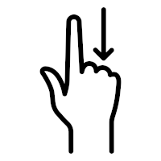 |
單指滑動 用一根手指滑動 作用範圍：螢幕邊緣（水平與垂直方向）；對角線方向則為邊緣以外的任何位置 |
雙指滑動 用兩根手指同時滑動 作用範圍：螢幕上的任何地方 |
|
多重滑動 在不抬起手指的情況下連續完成多次滑動，例如畫出字母 U（下-右-上） 作用範圍：螢幕上的任何地方 |
|
圖示由 Econceptive 創作，來自Noun Project |
此表顯示了 KOReader 附帶的手勢。你可以透過以下方式根據自己的喜好更改這些手勢：
左上角>切換翻頁
右上角 > 標記/取消書籤
同時點選對角>螢幕擷圖
左側>往回 10 頁
右側>往前 10 頁
短對角滑動>全螢幕刷新
長對角滑動>螢幕擷圖
- 返回上個位置
- 前往最近的書籤
- 快覽文件
- 書籤
- 目錄
- 顯示前光對話方塊
- 切換頁面重排
- 歷史記錄
- 書籍狀態
- 前往頁面
- 返回
- 上一章
- 下一章
- 開啟上一個文件
- 最愛
以下是所有可透過手勢管理員選單指派給手勢的操作清單。你可以使用瀏覽器的搜尋功能（通常是 Ctrl+F）在此處搜尋操作。這些操作也可以在你自己的快速選單中使用。如需更多資訊，請參閱指南中的相關章節。
- 檔案瀏覽器
- 開啟上一個文件
- 歷史記錄
- 歷史搜尋
- 最愛
- 收藏清單
- 在收藏清單中搜尋
- 字典查詢
- 維基百科查詢
- 叫出選單
- 選單搜尋
- 開啟上一本書所在資料夾中的下一個檔案
- 開啟上一本書所在資料夾中的上一個檔案
- 筆記檔案
- 螢幕擷圖
- 顯示閱讀進度
- Calibre 詮釋資料搜尋
- 瀏覽所有 Calibre 標籤
- 瀏覽所有 Calibre 叢書
- 瀏覽所有 Calibre 作者
- 瀏覽所有 Calibre 書名
- Calibre 無線連線
- Calibre 無線斷線
- 閱讀統計：切換
- 閱讀統計：顯示閱讀進度
- 閱讀統計：顯示時間範圍
- 閱讀統計：顯示日曆檢視
- 閱讀統計：顯示今日時間軸
- 閱讀統計：同步
- 文字編輯器：開啟上次的檔案
- 開啟單字本
- Wallabag 擷取
- 上傳 Wallabag 佇列
- 上傳 Wallabag 狀態
- 閱讀進度
- 切換 SSH 伺服器
- 統計日曆檢視
- 今天的統計時間軸
- 同步書籍統計
- 退出休眠
- 重新啟動 KOReader
- 退出 KOReader
- 切換角落長按
- 啟用觸控輸入
- 停用觸控輸入
- 切換觸控輸入
- 反轉翻頁按鍵
- 旋轉
- 切換螢幕方向
- 螢幕旋轉 ⟲ 180°
- 順時針旋轉 90°
- 逆時針旋轉 90°
- 切換全螢幕模式
- 顯示網路資訊
- 電池統計
- 系統統計
- 終端機模擬器
- 啟動 USB 儲存模式
- 休眠
- 重新啟動裝置
- 關閉電源
- 切換按鍵重複
- 切換重力感測器
- 開啟 Wi-Fi
- 關閉 Wi-Fi
- 切換 Wi-Fi 狀態
- 顯示前光對話方塊
- 切換前光
- 設定前光亮度
- 提高前光亮度
- 降低前光亮度
- 設定前光暖度
- 提高前光暖度
- 降低前光暖度
- 切換夜間模式
- 設定夜間模式
- 全螢幕刷新
- 完整重新整理頻率（一律）
- 完整重新整理頻率（非夜間模式）
- 完整重新整理頻率（夜間模式）
- 進入新章節時刷新
- 切換進入新章節時刷新
- 章節第二頁永不刷新
- 切換章節第二頁刷新
- 頁面含圖片時一律刷新
- 切換頁面含圖片時刷新
- 關閉自動暖度
- 根據太陽位置自動調整暖度
- 根據時間表自動調整暖度
- 接近午夜時自動調整暖度
- 接近正午時自動調整暖度
- 依照模式自動切換對應的暖度設定
- 字型
- 增加字型大小
- 減少字型大小
- 字型大小
- 文字間距
- 文字擴充
- 對比度
- 字重
- 字型微調
- 字距調整
- 雙欄
- 左右邊距
- 同步頂部/底部邊距
- 頂部邊距
- 底部邊距
- 檢視模式（連續頁）
- 繪製模式
- 縮放
- 行間距
- 頂部狀態列
- 內嵌樣式
- 內嵌字型
- 圖片縮放
- 圖片反色
- 設定顯示模式
- 排序依據
- 反向排序
- 資料夾與檔案一起顯示
- 顯示附加選單
- 切換選取模式
- 重新整理內容
- 資料夾捷徑
- 檔案搜尋
- 上次檔案搜尋結果
- 上一層
- 前往頁面
- 返回
- 匯出歷史記錄中所有書籍的全部筆記
- OPDS 目錄
- 顯示底部選單
- 切換狀態列
- 切換章節進度列
- 上一章
- 下一章
- 第一頁
- 最後一頁
- 隨機頁面
- 翻頁
- 前往頁面
- 快覽文件
- 上一個書籤
- 下一個書籤
- 第一個書籤
- 最後一個書籤
- 最新書籤
- 返回
- 返回到前一個位置
- 前進至下一個位置
- 前往最近的連結
- 前往最近的內部連結
- 將目前位置加入歷史記錄
- 清除位置歷史記錄
- 全文搜尋
- 上次全文搜尋結果
- 目錄
- 書籍地圖
- 書籍地圖（總覽）
- 頁面瀏覽器
- 書籤
- 書籤搜尋
- 切換書籤
- 書籍狀態
- 書籍資訊
- 書籍簡介
- 書籍封面
- 翻譯目前頁面
- 對調翻頁點選與滑動
- 切換翻頁方向
- 切換自訂目錄
- 切換自訂隱藏頁
- 設定劃線動作
- 循環劃線動作
- 循環劃線樣式
- 儲存書籍詮釋資料
- 匯出註解
- 匯出目前書籍中的全部筆記
- 匯出歷史記錄中所有書籍的全部筆記
- 將目前的書籍移至封存
- 閱讀統計：目前書籍
- 從這臺裝置推送閱讀進度
- 從其他裝置拉取閱讀進度
- 切換翻頁瀏覽
- 切換書籤瀏覽
- 切換頁面重排
- 縮放模式
- 變更縮放比例
- 切換格子縮放
- 頁面裁切
- 邊距
- 水平重疊
- 垂直重疊
- 適應
- 縮放到
- 分割頁面的欄數／列數
- 縮放比例
- 翻頁方向
- 檢視模式
- 頁面間隙
- 行間距
- 對齊方式
- 字型大小
- 調整字型大小
- 字詞間距
- 頁面重排
- 對比度
- 去除浮水印
- 繪製品質
- 文件語言
- 強制 OCR
- 文字方向
- 文件欄數
- 自動拉直
如果你有配備鍵盤的裝置，例如 Kindle 2 和 Kindle 3，包括藍牙鍵盤與模擬器，你就可以使用鍵盤按鍵、裝置按鈕和快速鍵來操作 KOReader。Kindle 4 也支援，它雖然沒有完整的鍵盤，但仍有足夠的按鈕可以使用。在這些裝置上，KOReader 會額外啟用一個名為鍵盤快速鍵的選單，你可以在這裡開啟它：
此選單與手勢管理員介面非常相似。在此選單中：
- 你可以看到裝置上可用的快速鍵
- 你可以看到部分快速鍵的預設操作
- 你可以將操作指派給可用的快速鍵
手勢管理員中的所有操作都可以指派給鍵盤快速鍵。這意味著你可以透過這些快速鍵控制 KOReader 的幾乎所有功能。
在下表中，你可以看到預設的按鍵與快速鍵對應：
資訊 通用的螢幕擷圖快速鍵是Alt + Shift + G。這個快速鍵在所有畫面、模式與平臺上都能使用。在 Kindle 4 上則是鍵盤鍵 + 選單鍵。
說明 如果你使用的是 Kindle 4，下表中的 Shift 鍵會對應到鍵盤按鈕。因此，Shift + （上/下/左/右）這類快速鍵在 Kindle 4 上會對應到鍵盤按鈕 + （上/下/左/右）。
在檔案瀏覽器中 | |
| 開啟頂部選單 | F1 |
| 導覽到主頁 | Home |
| 在檔案清單中移動 | Up / Down |
| 開啟所選書籍 | Enter |
| 退出應用程式 | Esc |
在閱讀介面中 | |
| 開啟頂部選單 | F1 |
| 開啟底部選單 | Enter |
| 返回/退出應用程式 | Esc |
| 書籤 | Shift+Left |
| 切換書籤 | Shift+Right |
| 字典查詢 | Ctrl+D （在 Kindle 上為 Alt+D） |
| 維基百科查詢 | Ctrl+W |
| 全文搜尋 | Ctrl+S |
| 檔案檢索 | Ctrl+F |
連結 | |
| 選擇下一頁連結 | Tab |
| 選擇上一頁連結 | Shift+Tab |
| 開啟所選頁面連結 | Enter |
圖片檢視器（長按圖片） | |
| 放大 | Page Down |
| 縮小 | Page Up |
劃線 | |
| 進入劃線模式 | H |
| 開始/結束 劃線 | Enter |
| 移動劃線遊標 | Left/Right Up/Down |
| 增加遊標移動速度 | Shift+ Left/Right/Up/Down |
| 退出劃線模式 | Esc |
瀏覽本書 | |
| 翻頁 | Left-Right / Up-Down Page Up / Page Down |
| 目錄 | Shift+Up |
| 書籍地圖 | Shift+Down |
| 轉到開頭 | 1 |
| 轉到書籍的11% | 2 |
| 轉到書的 22% | 3 |
| 轉到書的 33% | 4 |
| 轉到書的 44% | 5 |
| 轉到書的 55% | 6 |
| 轉到書的 66% | 7 |
| 轉到書的 77% | 8 |
| 轉到書的 88% | 9 |
| 轉到結尾 | 0 |
在快覽文件對話方塊中 | |
| 轉到開頭 | Q |
| 轉到書的11% | W |
| 轉到書的 22% | E |
| 轉到書的 33% | R |
| 轉到書的 44% | T |
| 轉到書的 55% | Y |
| 轉到書的 66% | U |
| 轉到書的 77% | I |
| 轉到書的 88% | O |
| 轉到結尾 | P |
頁面縮放 （僅適用於 PDF、DJVU 和圖片） | |
| 縮放至適合頁面 | A |
| 縮放以適應頁面寬度 | S |
| 縮放以適應頁面高度 | D |
| 縮放以適應內容 | Shift+A |
| 縮放以適應內容寬度 | Shift+S |
| 縮放以適應內容高度 | Shift+D |
快速選單是 KOReader 的最新功能，它讓你可以擁有一個可快速存取的個人化選單，如下圖所示。你可以將這個選單指定給某個手勢，只要滑動一次就能開啟它。你的選單甚至可以比螢幕更長，而且可以捲動。
基本上，任何可以指定給手勢的操作都能新增到快速選單中。它的優點是：
- 你不需要為每個動作記住很多手勢。
- 有些不常使用的操作可能不值得為它設定手勢，但在選單系統中找起來又太麻煩。你可以把這類少用的操作放進這個選單。
- 如果你正在為親戚或朋友安裝 KOReader，則可以將他們喜歡的操作新增到此選單中，以便他們在使用 KOReader 時甚至不需要進入選單系統。
快速選單範例：
建立快速選單有兩種方法：簡單方式和高階方式。如果你只需要一個選單，簡單方式應該就足夠了。如果你想用不同的手勢顯示不同的選單，就需要使用高階方式。高階方式的另一個優點是更容易重新指定手勢。如果要更改選單的手勢，可以使用高階方式建立的選單，輕鬆將它移動到另一個手勢。如果你在使用簡單方式時想改用其他手勢，就必須在新手勢下重新建立選單。
- 透過以下方式轉到手勢管理員選單：
- 決定要用來開啟選單的手勢，然後點選它。
- 從手勢設定選單中選擇要在選單中顯示的操作。當然，你也可以一次選擇多個操作。
- 選擇好所有操作後，你要告訴 KOReader 把這個手勢當成選單。做法是在第二頁啟用顯示為快速選單項目，如下圖所示。
- 你可以使用緊接在下方的排序選項來排序選單項目。
現在，你可以使用所選的手勢啟動選單。如果要更改選單項目，可以開啟手勢頁面並新增/刪除項目。
快速選單本質上是一個設定檔，只是以選單的形式顯示在螢幕上。因此在使用這項功能前，必須先瞭解設定檔。如果你已經知道怎麼使用，可以直接繼續閱讀；否則請跳到設定檔一節（也就是下一節），建立一個包含幾個項目的設定檔之後再回來。
在繼續之前，我們假設你已經按照上一段中的說明建立了設定檔。現在，我們將把設定檔轉換為快速選單。
（1）前往你剛建立的設定檔，在下圖所示的選單中啟用顯示在操作清單中，這樣你的設定檔就會出現在手勢管理員中。接著在同一個選單中啟用顯示為快速選單（同樣見下圖），這樣設定檔就會以選單形式顯示，而不是直接執行。
（2）現在，我們需要一種開啟選單的方法。前往手勢管理員，從清單中選擇一個手勢指定給選單。假設我們想點選螢幕角落來顯示選單，就先點選在螢幕四角點選，然後選擇左下角。接著點選一般並前往第二頁。你會看到自己的設定檔顯示為設定檔 X，其中 X 是你為這個設定檔取的名字。點選它的核取方塊，就能把設定檔指定給這個手勢。
完成所有步驟後，點選螢幕左下角時應該就會看到你的選單。你可以到該選單的設定檔頁面編輯它，在那裡新增或刪除項目。那裡也有排序項目，可以調整選單項目的順序。
如前所述，快速選單實際上是一套設定檔。這意味著你可以有多個選單。如果需要，可以建立另一個設定檔，並按照相同的步驟建立另一個選單。
通常快速選單會在選擇選單項目後從螢幕上消失。有時，你可能希望在選擇項目後保持選單開啟。這讓你可以像以下範例一樣調整設定：
- 漸進式調整，例如調高/調低亮度、放大/縮小字型大小、上一頁/下一頁或上一章/下一章等。
- 需要依序啟用的一組選項（但不必同時啟用），例如先開啟 Wi-Fi，接著再啟動 SSH 伺服器
如果你的快速選單是以手勢管理員為基礎（簡單方式）建立的，可以從下列選單啟用這個選項：
如果你的快速選單是以設定檔為基礎（高階方式）建立的，則從這個選單啟用：
通常，快速選單會在螢幕中央開啟。如果你單手使用電子閱讀器，可以啟用一項設定，讓選單在你做出手勢的位置開啟。這樣選單會更靠近你的手指，操作起來更方便。若要使用這項功能，請啟用這個選項：
設定檔基本上是一組操作的集合，只要一個手勢就能全部觸發（類似巨集）。
舉例來說，假設你在閱讀某類書籍時，總是會做以下幾件事：
- 將螢幕切換到橫向顯示模式
- 加大字型大小並提高對比，然後
- 開啟螢幕前光
透過設定檔外掛，你只要一個操作就能一次完成這些調整。
要建立設定檔，首先確保設定檔外掛已啟用。如果你在下面看不到它：
然後必須從以下位置開啟：
在設定檔選單中點選新增，並為設定檔取一個容易辨識的名稱。現在，你應該可以在選單中看到新的設定檔。點選它之後，你會看到左側的畫面。你也可以從這個選單刪除、重新命名或複製設定檔。
當你點選編輯操作選單項目時，你將看到右側的選單。這與手勢選擇選單相同，並且在許多類別中都有操作。這意味著你可以使用設定檔執行任何手勢操作。
現在，你可以從所有這些類別中選擇多個項目。啟用該設定檔時，將執行你在此處選擇的操作。
有許多方法可以啟用設定檔：
- 在設定檔選單中長按設定檔名稱，即可啟用該設定檔
- 你可以使用手勢啟用設定檔。為此，你必須從設定檔的選單中啟用顯示在操作清單中。現在，你可以透過以下方式選擇它：
- 你還可以根據某些條件自動啟用設定檔。請參閱下一個標題以瞭解如何使用此強大的功能。
你可以依照上述方式手動套用設定檔，但自動套用功能才能真正發揮設定檔的威力。透過這項功能，你可以根據某些條件與次級條件來觸發設定檔：
| 觸發條件 | 次級條件 |
| KOReader 啟動時 每次 KOReader 啟動時套用此設定檔。請注意，該條件僅在 KOReader 啟動頁面設定為檔案瀏覽器或上次閱讀的書籍時才會生效。 | 無 |
| 喚醒時 每次裝置喚醒時套用此設定檔 | 無 |
| 改變螢幕顯示方向時 當螢幕旋轉到指定方向時套用此設定檔。 範例：裝置轉為橫向時，切換為雙欄版面配置。裝置上下顛倒時，啟用夜間模式。 |
|
| 開啟資料夾時 在檔案瀏覽器中開啟指定資料夾時套用此設定檔。你也可以用這個觸發條件來變更檔案瀏覽器的顯示模式。例如，進入某個資料夾時，把檔案顯示模式從平鋪改為詳細清單。 |
|
| 開啟書籍時
當你開啟書籍時會執行這個觸發條件，也可以視需要搭配特定的次級條件。 前四項次級條件是以OR方式比對，因此只要符合其中任何一項，就會觸發設定檔執行。 |
|
| 關閉書籍時
此選項與上述相同，但它會在你關閉書籍時觸發。你可以使用此功能，例如在開啟某些文件時啟用/停用閱讀統計資訊，以將其從統計資訊中排除。 |
|
設定檔範例：
以下是我們的開發人員提供的設定檔範例，希望能讓你對 KOReader 這項強大功能的用法有些靈感。這些範例也包含自動套用條件與收藏清單功能：
- 將裝置轉為橫向時啟用雙欄模式。
- 將裝置倒置時啟用夜間模式。
- 將所有漫畫加入同一個收藏清單，然後建立一個設定檔，在開啟該收藏清單中的漫畫時，把翻頁方向改為從右向左，並對調左右兩側的翻頁點選與滑動手勢。
- 把你的漫畫書加入一個收藏清單，就能透過這個條件觸發設定檔，將螢幕重新整理間隔縮短為每一頁，以避免殘影。
- 首次從期刊資料夾開啟檔案時，觸發設定檔來調整字型與字型大小，並設定雙欄模式。
- 將有問題的 PDF 檔案加入一個收藏清單，這樣在開啟這些檔案時，就能透過設定檔啟用自動 OCR或重新排版模式。
- 在檔案瀏覽器中開啟特定資料夾時，切換顯示模式（封面、詳細清單等）。
- 開啟「參考類書籍」收藏清單中的書籍時停用閱讀統計，並在關閉書籍時重新啟用。
- 如果你在手勢管理員中開放了樣式微調項目，就能建立設定檔，依特定條件啟用或停用這些調整。例如，你可以建立一個「停用出版商樣式，並套用我的自訂樣式調整」的設定檔，並根據書籍的存放位置／收藏清單，或書籍詮釋資料中的關鍵字來觸發。詳細說明請參閱使用手冊的樣式微調一節。
!!! 進階
在 KOReader 中，一組操作／設定可以用兩種方式建立：
- 以設定檔的形式建立（也就是前面說的高階方式，儲存於 settings/profiles.lua）
- 以指定給某個手勢的操作清單形式建立（也就是前面說的簡單方式，儲存於 settings/gestures.lua）
操作組合也可以透過兩種不同的方式執行：
- 觸發後依照排序順序逐項套用每個操作（作為設定檔）
- 顯示為快速選單
新增/刪除一組操作，以及啟用/排序快速選單，都是透過同一個操作選單完成。唯一的差別是，手勢管理員中的操作選單多了兩個項目（穿透），因此顯示為快速選單和排序這兩個項目才會在第二頁。
說明 可以將設定檔備份並傳輸到其他裝置。詳情請參閱備份 KOReader 設定一節。
外掛是小型的 KOReader 程式，類似瀏覽器的擴充套件，用來擴充主程式的功能。KOReader 的外掛分為 3 類：
內建外掛是核心程式的一部分。
- 它們可以直接從 KOReader 的外掛選單開啟。
- 它們不需要安裝。你可以從選單中啟用它們。
- 它們都經過我們的開發人員檢查，因此可視為安全。
- 它們會隨 KOReader 更新而自動更新。
你可以透過以下方式啟用/停用它們：
!!! 進階
該組包含非官方外掛，這些外掛不屬於 KOReader 的核心邏輯。
- 它們必須手動安裝，然後從外掛選單啟用。
- 它們需要手動更新。
- 它們在新增到儲存庫時由我們的開發人員檢查，因此我們認為它們是安全的。
你可以從這個頁面取得它們。一般的安裝方式是從上述頁面下載外掛目錄，再複製到裝置上的 koreader/plugins 資料夾下。但請檢視外掛頁面，確認是否有其他安裝指示。
!!! 進階
這些是獨立於 KOReader 團隊開發的外掛。
- 它們必須手動安裝，然後從外掛選單啟用。
- 它們需要手動更新。
- 我們的開發人員不會檢查它們，因此請注意使用它們可能存在風險。
以下是幾個值得注意的外部外掛範例，並附上其 GitHub 頁面連結：
- AskGPT 外掛：你可以針對書中的內容向 ChatGPT 提問。你也可以用此外掛來簡化、解釋、討論文字，或將文字翻譯成其他語言。
- Assistant（AI 助理外掛）：上述外掛的分支版本，具備更多進階功能，例如可選擇多家 AI 服務供應商，以及內建或自訂提示詞。
- Anki 外掛：這款 KOReader 外掛可為你在內部字典中查詢過的單字產生 Anki（一款開源的抽認卡軟體）卡片。
- Zotero 外掛：這款外掛可讓你直接在 KOReader 中瀏覽你的 Zotero（一款開源的參考文獻管理軟體）收藏。
- Syncthing 外掛：這款外掛可讓你在 KOReader 上執行 Syncthing 點對點檔案同步程式（作者表示僅在 Kobo 裝置上測試過，但可能也適用於其他裝置）。如此一來，你的電子閱讀器就能與電腦或手機自動同步檔案。
你也可以點選這個連結，在 Github 上開啟搜尋頁面，發掘更多 KOReader 外掛專案。
自動調整螢幕前光 - 根據環境光亮度自動切換前光（僅適用於 Kindle Voyage 和 Oasis）
自動暖度和夜間模式 - 可在具備自然光（黃色/橙色）的裝置上調整前光暖度，並依照排程自動設定夜間模式
自動省電 - 在指定的不活動時間後，將裝置設為待機、暫停或關閉電源
自動掛起 - 裝置閒置超過指定時間後自動掛起（適用於除 Android 作業系統之外的所有電子墨水裝置）
自動翻頁 - 在設定的時間段後自動翻頁
背景執行程式 - 服務於其他外掛：允許任務在背景定期執行。
電池統計資訊 - 收集並顯示裝置的電池使用統計資訊
書籍捷徑 - 允許將書籍捷徑新增到手勢
Calibre - 你可以透過 Wi-Fi 連線，將文件從 Calibre 書庫直接傳送到 KOReader 裝置。請檢視我們的維基頁面瞭解操作方式。
封面瀏覽器 - 允許檔案瀏覽器和歷史記錄的封面顯示模式
封面圖片 - 將目前書籍的封面圖片另存為檔案（在 Android/PocketBook/reMarkable 裝置上可用）
匯出劃線 - 將劃線與筆記匯出為本機檔案，或匯出至 Joplin（一款筆記軟體）
抽記卡片練習 - 將個人書庫中的劃線內容按照間隔重複記憶法（SM2）產生抽記卡片
手勢 - 為 KOReader 提供手勢支援
遠端控制 - 允許你透過 Wi-Fi 從另一臺裝置控制你的裝置，請參閱下文瞭解更多資訊
日語支援 - 對 KOReader 的日語支援，擴充了內建字典和選擇系統
保持活動狀態 - 使裝置保持喚醒狀態，以防止自動斷開 Wi-Fi 連線
移動到封存 - 將目前文件移動到封存資料夾
新聞下載器 - 擷取 RSS 與 Atom 的新聞條目，並儲存為 HTML 檔案。請檢視我們的維基頁面瞭解操作方式。
OPDS - 允許你從線上目錄下載書籍
感知擴展器 - 讓你運用餘光（周邊視覺）加快閱讀速度。檢視這部 YouTube 影片，瞭解它的運作方式：如何在 20 分鐘內將閱讀速度提高三倍（蒂姆·費里斯）
設定檔 - 將多項設定整合成為一套可切換套用的設定檔
閱讀進度同步 - 在多臺 KOReader 閱讀裝置間同步閱讀進度。請查閱我們的維基頁面瞭解操作方式。
來自剪貼簿的 QR 碼 - 從剪貼簿內容產生 QR 碼
閱讀計時器 - 在使用者設定的時間結束後顯示訊息的倒數計時器
閱讀統計 - 計算閱讀工作階段的統計資料與閱讀速度，用以估算章節/書籍的剩餘時間
SSH - 允許你透過 SSH 協定存取你的裝置。你可以透過 FTP 應用程式存取，甚至使用檔案管理器（若有支援）。請檢視我們的維基頁面瞭解操作方式。
系統統計 - 你可以透過此外掛在下列位置檢視你的 CPU/記憶體/電池資訊：
終端機模擬器 - 在裝置上啟動可執行完整終端機應用程式的 shell（命令提示字元）
純文字編輯器 - 用於建立和編輯純文字檔案的基本文字編輯器
時間同步 - 將裝置時間與 NTP 伺服器同步
調整文件設定 - 允許在載入文件之前根據外部因素調整文件的設定
Wallabag - 從 Wallabag 伺服器下載最新文章，分別儲存成 EPUB 檔案。請檢視我們的維基頁面瞭解更多資訊。
!!! 進階
該外掛允許你透過 Wi-Fi 從另一臺裝置控制你的裝置。它的運作方式是在你的裝置上執行一個簡單的 HTTP 伺服器，該伺服器提供包含 KOReader 控制項的頁面。你可以透過網路造訪此頁面並控制你的閱讀器裝置。但是在使用此外掛時請注意以下幾點：
- 這是一個實驗性外掛，因此使用它需要你自擔風險
- 預設情況下，此外掛處於啟用狀態，但預設情況下伺服器不會啟動。你可以手動啟動它，也可以將其設定為自動啟動。
- 你應該僅在受信任的網路上執行此外掛，因為它非常不安全（沒有 HTTPS、沒有存取限制、沒有身分驗證）
你可以在MobileRead 論壇上閱讀此外掛的應用範例
!!! 進階
使用者修補程式是用 Lua 語言編寫的小檔案，可以在不必永久修改安裝內容的情況下改變 KOReader 的功能。修補程式可以由開發人員或其他使用者撰寫，你也可以自己動手（前提是你需要對 KOReader 的內部運作有相當深入的瞭解）。
你可以在我們的維基頁面找到目前使用者修補程式的清單，也可以檢視 GitHub 議題清單中帶有 User patch available 標籤的議題，請點選這個連結前往。
- 在裝置上的 KOReader 目錄下建立名為 patches 的目錄（在 Android 上，該資料夾位於 SD 卡上）
- 下載副檔名為 .lua 的修補程式檔案，並放入這個 patches 目錄
- 重新啟動 KOReader
依照上述說明建立 patches 目錄並重新啟動 KOReader 後，外掛選單中會出現一個名為修補程式管理的外掛。透過此外掛，你可以檢視使用者修補程式的清單與狀態，並啟用或停用它們。你也可以點選關於修補程式管理員選單項目檢視詳細資訊。
修補程式的執行順序取決於檔名中數字的第一位數字。例如：2-TOC-title-patch.lua。如果有多個修補程式以同一個數字開頭，則依自然順序執行（1<10<11<12<13<…<109<…<10010）。如果你只是下載現成的修補程式，就不需要更改檔名。
名稱以：
- 0 - 最早執行，並且僅在更新後執行一次
- 1 - 每次啟動 KOReader 時很早就會執行（若適用，則在 0 之後）
- 2 - 在每次啟動 KOReader 時 UIManager 準備就緒後執行
- 3-7 - 保留
- 8 - 在退出之前和儲存設定之前執行
- 9 - 在退出前執行
如果使用者修補程式發生問題，只要刪除該修補程式檔案，就能恢復到先前的設定。
如果需要在兩個文件之間切換（例如要比對內容時），有比透過檔案瀏覽器更快的方法。KOReader 可以用手勢開啟上一份文件（ 多重滑動）。如果把某個手勢的動作設為開啟上一個文件，就能在兩個文件之間快速切換，就像桌上型電腦的 Alt+Tab 功能。你可以在下列位置找到這項功能：
此外，你也可以使用歷史記錄對話方塊在文件之間快速切換。歷史記錄畫面可以用 多重滑動手勢開啟。當然，你也可以為此指定任何其他手勢。
你可以從以下選單更改書籍封面：
有些書沒有合適的封面，或者封面放在第二頁而無法正確顯示，也可能封面不適合電子墨水螢幕（太亮或太暗），又或者你想把書裡的某張圖片設為封面。
遇到這種情況時，你可以快速擷取螢幕畫面並設為目前書籍的封面。預設的螢幕擷圖手勢是長距離對角滑動；此外，同時觸控對角的兩個角落也能擷取螢幕畫面。檢視圖片時，你可以使用這第二種捷徑。完成螢幕擷圖後，從對話方塊中選擇設定為書籍封面即可。
你可以在此處刪除此自訂書籍封面：
在書籍資訊頁面，長按封面圖片項目，然後選擇重設自訂。
你也可以用重設對話方塊重設書籍封面，只要在檔案瀏覽器中長按檔案名稱，就能開啟這個對話方塊。
如果你的文件含有連結，而且你在翻頁或使用其他手勢時常不小心點選到它們，可以透過以下選單項目關閉 點選時開啟連結：
停用此設定後，若要開啟連結，必須長按連結，再從快顯選單中選擇前往連結。如果你遇到的問題正好相反，希望點選連結更容易，可以在同一個選單中啟用允許連結周圍有更大的點選區域。
在閱讀統計中，你可以更改計算時所使用的一天起始時間。例如，如果你在午夜過後仍在閱讀，並希望這段閱讀時間計入今天而非隔天，這項設定就很有用。它只適用於日時間線檢視，並可選擇套用到日曆檢視，不影響其他任何統計報表。你可以在下列位置設定這個時間：
KOReader 可以透過 Wi-Fi 自行更新。你可以透過下列選單項目觸發更新檢查：
KOReader 沒有提供直接對應的選項，但有個變通做法可以達到類似的鎖定螢幕效果：你可以設定 KOReader 讓螢幕保護程式持續停留在畫面上，直到你做出指定的手勢。設定步驟如下：
- 選擇任何手勢（包括自訂多重滑動在內的複雜手勢），並到下列位置將它設為你的「解鎖」手勢：
- 然後啟用此選項：
如果你的裝置閒置一段時間，KOReader 可以調暗你的前光以節省電池電量。你可以透過以下方式開啟和調整此功能：
如果你想知道目前頁面顯示了多少行或多少字，可以在下列位置檢視：
鋰離子電池在電量處於兩端極值時損耗較大。為了盡量減少這種損耗並延長電池壽命，你可以將最低放電量限制在 20%，最高充電量限制在 80%（電動車和部分較新的手機就是這麼做的）。也就是說，當電量降到 20% 時開始為裝置充電，充到 80% 時就拔掉電源（如果你特別謹慎，也可以採用 25%-75%）。
當電量達到你設定的限制時，KOReader 可以顯示警示來提醒你：
你可以透過此選單項目檢視詳細的電池使用統計資訊：
你可以透過此選單項目檢視你的系統資訊，例如CPU/磁碟空間/記憶體使用情況：
在較舊的 Kindle 裝置上，有些使用者回報因為記憶體不足而當機。如果你在同一個工作階段中開啟多個檔案，KOReader 的記憶體用量可能會上升，PDF 尤其明顯。你可以在狀態列加入記憶體指示器，一旦這個數值過高，就重新啟動 KOReader，以避免當機或重新開機。
此外，你也可以透過下列設定，讓 KOReader 在記憶體用量達到門檻時自動重新啟動：
若在本指南中找不到問題的解決方法，你可以在本專案的 GitHub 頁面開啟新的議題，或在 Mobileread 論壇的 KOReader 版面發文詢問。詳細資訊請參閱本指南的最後一節。
KOReader 有兩個不同的版本分支：
- 穩定版 這是你在專案 GitHub 的 Releases 頁面中找到的主要版本，版本名稱形如「KOReader 2024.11」，代表這個版本於2024 年 11 月釋出。穩定版通常每個月釋出一次，但有時間隔會更長。
- 每夜版 這些版本是每天編譯的 KOReader 版本，會持續加入優化與修正。每夜版主要供少數測試者與開發人員使用，因此穩定度可能較差。
一般來說，如果你只是一般使用者，穩定版就是最適合你的選擇。但在某些特殊情況下，你可能需要改用每夜版：
- 你的裝置非常新（例如最近推出的 Kobo 機種），而 KOReader 的支援才剛加入最新的每夜版。
- 你的裝置有專屬的錯誤或問題，雖然已經修復但尚未釋出，而你不想等到穩定版推出才拿到這個修正。
- 更新 KOReader 後，你發現原本在用的某項功能被移除了。如果你不想失去這項功能，可以安裝仍保留該功能的每夜版。當然，你也可以改回先前的穩定版，但每夜版版本較新，可能具備更多功能與修正。
本節只是這個主題的概略介紹。如需每夜版的詳細資訊或想要尋求協助，可以造訪討論頁面：FAQ: 如何追蹤最新的每夜版
提示 在 Android 裝置上使用 KOReader 時，可以利用 Android 系統的工作設定檔（Work Profile）功能來測試每夜版，而不會影響你原本安裝的 KOReader 主版本。Shelter 和 Island 等開源應用程式也能幫你做到這點。
在少數情況下，如果你想連同所有設定一起備份並還原 KOReader，可以備份 KOReader 安裝目錄下的這些資料夾與檔案。之後在全新安裝時覆蓋回去，就能還原你的設定：
- 設定
- 樣式微調
- data/cr3.ini
- defaults.persistent.lua
- history.lua
- settings.reader.lua
- settings/profiles.lua
- data/dict/ 和 /data/tessdata/ 目錄下的檔案 （如果存在）
如果你啟用了將劃線寫入 PDF功能，就可能會發生這種情況。因為儲存 PDF 劃線會改變檔案內容，導致同步失敗。如果你打算同時使用這兩項功能，請在閱讀進度同步外掛的設定中，把文件比對方式從預設的二進位檔比對改為檔名比對：
KOReader 經過優化，即使在電子書閱讀器有限的硬體上也能順暢運作。一般來說，上千頁的書也能在幾秒內開啟，翻頁更是即時完成。接下來，我們將說明書籍在開啟、翻頁或調整外觀時感覺非常緩慢的可能原因。
如果有問題的書籍是 PDF：
- PDF 檔案本身對於你的裝置記憶體來說可能太大。
- PDF 檔案可能包含非常大的圖片。即使文件帶有正常的文字層（可選取並劃線），底下仍可能疊了另一層圖片（通常是整頁掃描）；這會拖慢開啟與翻頁的速度，因為這些大圖必須重新縮放以符合螢幕大小，而這個過程會耗費不少 CPU 資源。
- PDF 檔案可能包含許多需要精確定位的獨立元素，例如版面有大量圖片與文字框的雜誌頁面。這種情況下，KOReader 必須計算並繪製所有元素，因而可能耗費不少時間。
- 自動拉直功能（可用來調整頁面的傾斜）也可能會拖慢你的閱讀器。
- 如果你把繪製品質設為高品質，且重排為開啟，文字會比較美觀，但速度可能比預設慢很多（視文件而定，每次翻頁最多可能要等好幾秒）。
如果有問題的書籍是 EPUB：
- EPUB 檔案基本上由文字與圖片組成，再加上一些決定這些內容在螢幕上如何編排的規則。在理想情況下，這個過程相當單純，因此 EPUB 檔案在 KOReader 中通常很快。但有些 EPUB 書籍加入了大量排版規則，讓 KOReader 光是顯示一個句子就必須進行許多計算。這會拖慢開啟書籍、翻頁，以及變更字型粗細或行距等外觀屬性的速度。
說明 KOReader 不支援固定版式 EPUB 文件。這類文件仍可在 KOReader 中開啟，但會作為可重排 EPUB 繪製，版面可能會錯亂或難以閱讀。
- EPUB 檔案格式本質上是包含 .html 檔案的 ZIP 壓縮檔。有些書籍只有單一個 .html 檔案，有些則由多個 .html 檔案組成，例如每一章都是獨立的 .html 檔案。如果書籍只有單一個 .html 檔案，就無法使用分段繪製，因此調整樣式會比章節分開的書籍慢，因為每次調整 KOReader 都必須處理整本書，而不是只繪製目前章節。
- 另一種罕見的緩慢情況是內容被包在 HTML 表格標籤中。KOReader 每次翻頁都得繪製每一個儲存格，因此如果某個儲存格（內含許多段落）長達 50 頁，翻頁就會變得非常慢。解決方式請見下文。
如果一切都很慢：
如果只有部分書籍很慢，上述原因通常就是主因。如果所有書籍都很慢，問題可能出在裝置本身：
- CPU 速度非常慢或 RAM 不足。
- 你的快閃記憶體（也就是存放書籍的地方）可能正在衰退，這通常是裝置老舊造成的。
- 你的儲存空間不足。
- 如果你使用的是基於 Android 的裝置，你的 Android 系統可能會干擾 KOReader 的執行，或者某些背景處理程序可能正在佔用你的系統資源。
解決方案：
遺憾的是，對於品質不佳的 PDF 檔案，能做的並不多。遇到有問題的 PDF 或 EPUB 時，最好的解決辦法通常是找一個更好的版本。或者，如果有其他檔案格式可以下載，例如用 EPUB 取代 PDF（或反過來），也可以試試看。
以下解決方式適用於 EPUB 檔案，但可能需要一些進階知識：
- 你可以在底部選單把內建樣式設為關閉，看看忽略所有文件樣式表是否能加快速度（當然，你大概會因此失去原本漂亮的排版，但至少能找出問題的根源）。
- 如果你具備 HTML 與 CSS 知識，可以直接在 KOReader 中檢查 HTML 與 CSS 檔案，自行判斷它們的品質，或是否過於複雜。做法是長按某段文字，再從快顯選單中選擇檢視 HTML。
- 如果你遇到前面問題一節提到的「內容被包在表格中」的情況，可以把這段 table, tr, td { display:block; } 加入僅套用於本書的樣式微調：
- Calibre 的電子書編輯器可以檢查 EPUB 檔案是否有問題，並提供一些工具來修正部分問題。
你可以從這裡下載 Calibre。
書籍檢查工具的使用說明可以在 Calibre 的使用指南中查閱。
- EPUBCheck 應用程式可以檢查 EPUB 檔案是否有效，並偵測多種類型的錯誤。你可以閱讀這則範例議題，其中的問題就是用 EPUBCheck 找出來的。
你可以從這裡下載命令列版本。
圖形使用者介面（GUI）版本則可從這裡下載。
開啟新的議題：
如果你要針對這個問題開啟新的議題，我們必須檢視有問題的檔案，這一點非常重要。你可以先把檔案壓縮成 ZIP，再直接拖放到 GitHub 留言中。如果你的書是 EPUB，而且因為版權或隱私考量不想分享該檔案，可以使用 Calibre 的一款外掛 ScrambleEbook，下載位置與說明請見這個Mobileread 論壇頁面。
此外掛會讀取未加 DRM 的電子書檔案（EPUB/KEPUB/AZW3），並產生一份文字已被隨機字元取代的書籍副本。你可以在議題討論串中與我們分享這個打亂過的版本。書中的文字將無法閱讀，也不會構成任何版權侵害，但我們仍可用這個檔案來診斷問題。
你可以在這裡看到一個實際案例的處理過程，該案例涉及一個問題相當嚴重的 EPUB 檔案。
這些小數字稱為參考頁碼。簡單來說，它們就是你這本書紙本版本的實際頁碼。詳細說明請點選閱讀螢幕前往相關章節。
你可能是點選了螢幕底部的狀態列觸控區。再點選同一個區域就能讓它重新出現。
這種情況可能發生在手抖，或裝置觸控螢幕有問題的時候。如果你遇到這個問題，可以試著加大點選間隔。加大間隔後，KOReader 就會忽略同一位置的快速連續點選。
如果連續兩次點選的位置相隔一段距離，就不受這個選項影響。因此你仍可用兩根手指交替快速點選螢幕來快速翻頁。
在 Android 裝置上，受限於 Android 系統的限制，KOReader 無法寫入外部儲存空間。如果你想更改螢幕擷圖的儲存位置，請務必選擇裝置的內部儲存空間。
即使將 KOReader 設定為每頁完整刷新，翻頁後仍可能看到一些殘影或殘留。這是電子墨水螢幕技術的限制，即使在最新一代裝置上也會發生，閱讀圖文混合的文件時尤其明顯。如果你覺得困擾，可以在翻頁後再手動刷新一次來消除這些殘影（預設手勢為短距離對角滑動）。
休眠皮套通常內嵌磁鐵，透過觸發裝置中的感測器來喚醒或休眠。這個感測器有時也稱為霍爾感測器或霍爾效應感測器。在某些情況下，例如磁鐵沒有對準或磁力變弱，就可能無法正確觸發。如果你的裝置因為皮套而無法喚醒，可以透過以下選單停用這項功能：
如果標題、小標題或分隔線沒有正確置中，或出現非預期的文字縮排，請嘗試切換文件的樣式，把epub.css 改成 html5.css。這類問題的成因是，有些出版方假設他們的書只會在以瀏覽器引擎為基礎的閱讀器上閱讀，所以沒有費心「重設」樣式。
- 預設的 HTML/EPUB (epub.css) 是我們專為書籍設計的樣式表，採用 text-align: justify, text-indent on P。它比較適合沒有樣式的書籍，也可能讓有樣式的書籍更容易閱讀。
- 如果你的書籍有上述的縮排問題，可以嘗試切換到 HTML5 (html5.css)。這種樣式提供類似網頁瀏覽器的基本樣式表： text-align: left, no text-indent on P, spacing between P。不過如果出版方完全沒有做樣式，版面看起來就不會太好看。
KOReader 會快取書籍封面，以便更快顯示。正常情況下，這個快取不會佔用太多空間。如果你刪除了大量書籍或重新命名資料夾，可能會想清理書籍封面快取資料庫來回收一些空間。你可以透過下列選單執行：
當你閱讀 PDF/DJVU 文件時，KOReader 會快取你最後閱讀的頁面，這樣重新開啟這本書時速度會更快。不過，如果你長期使用 KOReader 並閱讀大量 PDF/DJVU 文件，這個快取可能會愈來愈大。快取檔案存放在 KOReader 安裝目錄下的快取資料夾中。若要清除快取並回收空間，請前往：
KOReader 以 GitHub 作為專案基地。你可以在我們的 GitHub 頁面回報問題或提出建議，只需要一個免費的 GitHub 帳號。點選這個連結即可開啟本專案的GitHub Issues 頁面。
在 Issues 頁面點選 New Issue 按鈕即可提出問題。但在此之前，建議你先用搜尋列確認是否已經有人針對同一主題提出過議題，也可以看看其他已開啟的議題，瞭解整個流程。
點選 New Issue 按鈕後，你會看到兩個選項：
點選你需要的選項，然後按照頁面上的說明報告你的問題或提出建議。
如果你要回報錯誤，附上詳細的除錯記錄檔會非常有助於找出問題。你可以透過下列方式啟用：
你也可以在同一個對話方塊中找到你的 KOReader 版本號與裝置型號，回報時一併提供。
如果你對這份使用者手冊有任何建議或疑問，可以到GitHub 討論串留言
|
前往 MobileRead 論壇與其他 KOReader 使用者交流 |
透過 Gitter 聊天室與我們聯絡 |
透過 Liberapay 贊助本開源專案 |